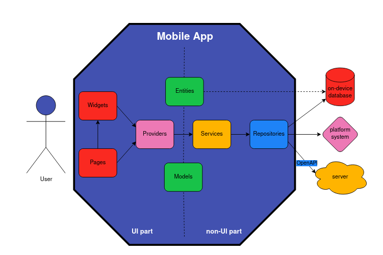
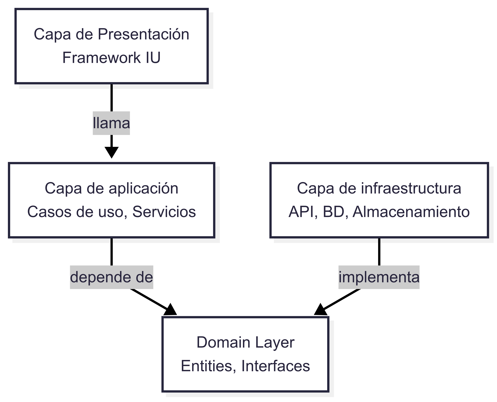

En la era digital actual, la generación de contenido multimedia personal ha alcanzado niveles sin precedentes. La aparición de teléfonos inteligentes equipados con cámaras de alta resolución ha convertido a cada individuo en un creador de contenido, documentando su vida a través de miles de fotografías y vídeos. Este vasto volumen de datos requiere soluciones de almacenamiento robustas, accesibles y, sobre todo, duraderas.
En respuesta a esta demanda, han surgido gigantes tecnológicos que ofrecen servicios de almacenamiento en la nube, como Google Photos, Apple iCloud y Amazon Photos. Estas plataformas proporcionan una comodidad innegable: sincronización automática entre dispositivos, copias de seguridad sin esfuerzo y potentes herramientas de organización basadas en Inteligencia Artificial (IA). Sin embargo, este modelo de servicio centralizado presenta una serie de inconvenientes significativos que a menudo pasan desapercibidos para el usuario promedio.
El primer y más crítico es la privacidad. Al subir recuerdos personales a servidores de terceros, se cede una parte considerable del control sobre los datos. Estos archivos pueden ser analizados para fines publicitarios, sujetos a políticas de servicio que cambian unilateralmente y, en última instancia, vulnerables a brechas de seguridad fuera de nuestro control. Este factor lleva al usuario a depositar su confianza en estas corporaciones, a menudo de manera injustificada.
El segundo factor es el coste económico. La mayoría de estos servicios operan bajo un modelo freemium, ofreciendo un nivel de almacenamiento gratuito inicial que, para la mayoría de los usuarios, resulta insuficiente a medio plazo. Una vez superado este umbral, se ven obligados a suscribirse a planes de pago mensuales o anuales, generando una dependencia económica continua para poder seguir almacenando sus propios recuerdos.
En tercer lugar, existe el problema del vendor lock-in o dependencia del proveedor. Migrar una biblioteca de miles de fotos y vídeos de un servicio a otro es un proceso a menudo complejo y tedioso. Las herramientas de exportación pueden ser limitadas, y los metadatos valiosos (como álbumes, etiquetas o datos de reconocimiento facial) rara vez son transferibles, lo que atrapa al usuario en un ecosistema cerrado.
Frente a este panorama, emerge con fuerza el concepto de autoalojamiento (self-hosting). Esta filosofía defiende devolver al usuario el control total sobre sus datos, alojando los servicios en hardware propio, como un ordenador personal, un servidor doméstico o un NAS (Network Attached Storage). El movimiento del software de código abierto (FOSS) ha sido un pilar fundamental para atacar este problema, proveyendo alternativas potentes y transparentes a las soluciones propietarias. Proyectos como Immich, PhotoPrism o Ente, analizados en detalle en el capítulo de Estado del arte, demuestran la viabilidad y el creciente interés en soluciones de gestión multimedia que priorizan la soberanía digital del usuario.
Este proyecto se inscribe en esa corriente. Busca ofrecer una solución integral que no solo resuelva el problema práctico del almacenamiento limitado, sino que también aborde las preocupaciones fundamentales de privacidad, coste y control. El objetivo es desarrollar un servicio de almacenamiento y sincronización de archivos multimedia que sea seguro, eficiente y, lo más importante, que pueda ser alojado y gestionado por el propio usuario en sus equipos personales, devolviéndole así la propiedad y el control absoluto sobre su vida digital.
La inspiración de este proyecto surgió de una situación cotidiana. Durante un periodo vacacional, un familiar cercano expresó su frustración al haberse quedado sin espacio de almacenamiento en Google Photos. La solución inmediata que proponía el servicio era, previsiblemente, contratar una suscripción de pago. Este escenario, aparentemente trivial, destapó una problemática mucho más profunda: la de usuarios no técnicos que, por desconocimiento de alternativas, se ven obligados a seguir un modelo de dependencia económica y de cesión de datos sin ser plenamente conscientes de las implicaciones.
La necesidad inmediata era práctica: crear un sistema sencillo que permitiera transferir automáticamente las fotos desde un teléfono móvil a un portátil antiguo disponible en el hogar, utilizando la red WiFi local. Sin embargo, esta idea inicial evolucionó rápidamente hacia una motivación más ambiciosa. No se trataba solo de solucionar un problema puntual, sino de abordar la raíz del mismo: la falta de herramientas accesibles que empoderen a los usuarios para gestionar su propia información.
Desde una perspectiva técnica, el proyecto representa un desafío estimulante. ¿Es posible construir una solución que iguale o supere la experiencia de usuario de los servicios comerciales, pero utilizando tecnologías de código abierto y un modelo descentralizado? Esta pregunta impulsa la exploración de herramientas modernas y de alto rendimiento. Más allá del reto tecnológico, existe una fuerte motivación filosófica alineada con los principios del software libre. La idea de crear un proyecto FOSS desde cero, con una arquitectura clara y una documentación exhaustiva (Objetivo Específico OE4), tiene como fin no solo ofrecer una herramienta útil, sino también construir una comunidad a su alrededor. Se busca que otros desarrolladores puedan entender, utilizar y, lo más importante, contribuir al proyecto, fomentando un ecosistema colaborativo que garantice su sostenibilidad y evolución a largo plazo.
Finalmente, este Trabajo de Fin de Grado es, en sí mismo, un motor de aprendizaje. La realización del proyecto implica sumergirse en disciplinas clave de la ingeniería de software: desde el diseño de arquitecturas de sistemas distribuidos (OE1, OE5) y el desarrollo de aplicaciones móviles nativas (OE7), hasta la implementación de protocolos de seguridad robustos (OE3) y la planificación de estrategias de respaldo y recuperación de datos (OE6). Cada objetivo específico es una oportunidad para adquirir conocimientos prácticos y enfrentarse a problemas reales, consolidando la formación académica y preparándose para los desafíos del mundo profesional. En definitiva, la motivación es doble: resolver una necesidad real y tangible para los usuarios y, al mismo tiempo, crecer como ingeniero de software a través de la construcción de una solución completa, moderna y significativa.
Objetivo general
Desarrollar una solución multiplataforma, multiusuario y open-source para la compartición de archivos multimedia.
Objetivos específicos
El desarrollo de este proyecto se separa en varias fases:
A continuación se muestra el diagrama de Gantt con la planificación del proyecto:

Para el cálculo y desglose del presupuesto total del proyecto se ha supuesto un equipo de una única persona a media jornada.
Para el cálculo del presupuesto de personal hemos tenido en cuenta el salario medio de un ingeniero de software en España, que según el portal de empleo Glassdoor ronda entre los 24.000 y 33.000 euros brutos anuales, cogiendo el valor de 30.000 euros brutos anuales como salario base dado que se trata de un estudiante en prácticas con conocimientos técnicos avanzados.
Para calcular el costo total mensual de un trabajador, tenemos que sumar al salario base los costes de seguridad social, la cuota patronal y el IRPF, siguiendo la siguiente fórmula:
| (1) |
Seguridad social: 6,45% sobre el salario bruto mensual:
| (2) |
Cuota patronal:
| (3) |
IRPF: con un salario bruto anual de 15.000 euros (media jornada), el IRPF aplicable sigue siendo del 19%:
| (4) |
De esta manera, el coste total mensual del trabajador sería:
| (5) |
La duración total del proyecto es de aproximadamente 4,67 meses (20 semanas), por lo que el coste total en personal asciende a:
| (6) |
Para el gasto de materiales solamente tendremos materiales inventariables, concretamente el material de trabajo del trabajador:
| (7) |
Dado que uno de los objetivos principales del proyecto es la capacidad de alojar la aplicación en un servidor propio, no tenemos en cuenta el coste de un servidor.
Dado que la aplicación se ha desarrollado usando tecnologías open source, no se han tenido en cuenta los costes de licencias de software.
Para la formación del trabajador se han usado cursos gratuitos así como la documentación oficial de las tecnologías utilizadas, por lo que no se ha tenido en cuenta ningún coste adicional.
De esta forma, tendríamos el siguiente desglose de costes:
| Gastos elegibles | Unidades | Coste por unidad | Importe solicitado |
| GASTOS DE PERSONAL | 8.469,86€ | ||
| Total gastos de contratación de personal | 4,67 | 1.813,25€/mes | 8.469,86€ |
| GASTOS DE EJECUCIÓN | 146,25€ | ||
| Costes de adquisición de material inventariable | 146,25€ | ||
| Ordenador | 1 | 97,22€ | 97,22€ |
| Monitores | 1 | 19,45€ | 19,45€ |
| Teclado y ratón | 1 | 29,58€ | 29,58€ |
| Costes de adquisición de material fungible | 0€ | ||
| Costes de consultoría, prestación de servicios, suministros, etc. | 0€ | ||
| Costes de subcontratación | 0€ | ||
| GASTOS COMPLEMENTARIOS | 0€ | ||
| Formación del equipo de desarrollo | 0€ | ||
| Gastos de desplazamiento, viajes, estancias y dietas | 0€ | ||
| Gastos de inscripción en congresos y seminarios | 0€ | ||
| COSTES DIRECTOS (10% presupuesto total) | 861,61€ | ||
| TOTAL INCENTIVO SOLICITADO | 9.477,72€ | ||
Esta memoria se organiza en varias secciones que abordan de manera progresiva el desarrollo del proyecto, desde su el desarrollo teórico hasta la implementación práctica y sus conclusiones.
En primer lugar, la Introducción presenta el contexto, la motivación y los objetivos que guían este trabajo, junto con una planificación inicial y un análisis de costes. A continuación, el Resumen y los Agradecimientos ofrecen una visión general y un reconocimiento a quienes han apoyado la realización de este proyecto.
El capítulo de Estado del arte realiza un análisis exhaustivo de las soluciones existentes, tanto propietarias como de código abierto, identificando sus fortalezas, debilidades y las tecnologías que emplean. Este estudio fundamenta las decisiones tomadas y destaca las aportaciones originales de nuestra propuesta.
La sección de Análisis de tecnologías profundiza en las herramientas y lenguajes de programación considerados para el desarrollo, justificando la elección de Rust para el servidor y Lynx.js para el cliente móvil en base a criterios de rendimiento, seguridad y escalabilidad.
El núcleo de la memoria se encuentra en el capítulo de la Propuesta, donde se detalla la metodología de desarrollo ágil (Scrum) adoptada y se describe la arquitectura del sistema. Esta sección se complementa con los capítulos dedicados a cada Sprint, en los que se documenta el progreso iterativo del proyecto, detallando las historias de usuario implementadas y las decisiones técnicas tomadas.
Finalmente, las Conclusiones recogen una reflexión sobre los resultados alcanzados, el cumplimiento de los objetivos, los problemas encontrados y las futuras líneas de trabajo que se abren a partir de este proyecto.
Tenemos que describir de manera concisa y concentrada el motivo del trabajo, objetivo y conclusiones a las que se llega. Esta sección tiene que estar en inglés y en español.
Personas que me han apoyado en la realización de este trabajo.
Qué se ha hecho hasta ahora en este campo, qué tecnologías se han utilizado, qué problemas se han encontrado, qué soluciones se han propuesto.
En este apartado se presenta un análisis del estado del arte en el ámbito de las bibliotecas de archivos multimedia de código abierto (FOSS). Se examinan las principales soluciones disponibles, sus características técnicas, fortalezas y limitaciones, así como las tendencias actuales en el sector. Dado que uno de los objetivos del proyecto es desarrollar un producto que sea de código abierto, la comparación se centra en soluciones FOSS que ya están en el mercado y que han sido ampliamente adoptadas por la comunidad, lo cual nos va a permitir desarrollar una comparación mas extensa sobre cómo están organizados los proyectos para facilitar su mantenimiento y escalabilidad, así como las tecnologías que utilizan para ofrecer sus servicios.
Además, se realiza un estudio sobre las tecnologías que vamos a utilizar en el proyecto en comparación con las alternativas y las que ya se utilizan en los proyectos existentes que se analizan.
En el panorama actual de las bibliotecas de archivos multimedia de código abierto, existe una amplia variedad de soluciones que buscan ofrecer alternativas libres y gratuitas a los servicios propietarios como Google Photos o iCloud. Este análisis del estado del arte se centra en las tres soluciones más populares según el número de estrellas en GitHub: Immich, PhotoPrism y Ente.
En el ámbito de la gestión y almacenamiento de fotografías, las soluciones propietarias han marcado el estándar en cuanto a experiencia de usuario, integración de servicios y capacidades avanzadas de inteligencia artificial. Entre las plataformas más destacadas se encuentran Google Photos, Apple Photos, Amazon Photos y Microsoft OneDrive Photos, cada una con un enfoque particular y funcionalidades diferenciadoras.
Google Photos sobresale por su motor de búsqueda semántica basado en inteligencia artificial, que permite localizar imágenes mediante descripciones textuales, reconocimiento automático de objetos, lugares y personas, así como la agrupación inteligente de rostros. Además, ofrece funciones como la creación automática de álbumes, recuerdos personalizados, sugerencias de edición y generación de vídeos y animaciones a partir de colecciones de fotos. La integración con Google Assistant permite búsquedas por voz y automatización de tareas relacionadas con la gestión de imágenes.
Apple Photos, por su parte, se integra de forma nativa en el ecosistema de dispositivos Apple, ofreciendo sincronización automática y segura a través de iCloud. Destaca por sus potentes herramientas de edición no destructiva, la organización automática mediante “Memories” y “People”, y la privacidad reforzada mediante el procesamiento local de datos sensibles, como el reconocimiento facial. La integración con Siri permite búsquedas contextuales y sugerencias inteligentes.
Amazon Photos ofrece almacenamiento ilimitado de fotografías en alta resolución para suscriptores de Amazon Prime, así como detección automática de duplicados y organización por personas, lugares y objetos. Su enfoque está orientado a la simplicidad y la capacidad de compartir álbumes de forma privada o pública, además de la integración con dispositivos Amazon Echo Show para visualización mediante comandos de voz.
Microsoft OneDrive Photos integra la gestión de imágenes con el resto de servicios de productividad de Microsoft 365, facilitando la colaboración y el acceso multiplataforma. Incluye funciones de etiquetado automático, búsqueda por contenido visual y organización cronológica, así como integración con herramientas de edición en línea y sincronización con dispositivos Windows y móviles.
Entre las características avanzadas que suelen estar más desarrolladas en estas soluciones propietarias, y que pueden servir de inspiración para el desarrollo de alternativas open-source, destacan:
Si bien algunas de estas funcionalidades comienzan a estar presentes en proyectos de código abierto, la madurez, precisión y facilidad de uso de las implementaciones propietarias sigue siendo, en muchos casos, superior debido a la inversión en inteligencia artificial, recursos computacionales y la integración profunda con sus respectivos ecosistemas. La incorporación de estas capacidades en soluciones FOSS representa un reto y una oportunidad para cerrar la brecha funcional existente.
El ecosistema de bibliotecas de archivos multimedia de código abierto ha experimentado un crecimiento significativo en los últimos años, impulsado por las crecientes preocupaciones sobre la privacidad de los datos y la dependencia de servicios en la nube propietarios. Según el análisis comparativo realizado por Meichthys (meichthys, 2025), existen más de 16 proyectos activos que ofrecen diferentes enfoques y características.
Las soluciones analizadas se pueden clasificar en tres categorías principales:
(«Documentación de Immich», 2025) Immich es una solución de gestión de fotos de código abierto orientada a usuarios que buscan una alternativa privada y autoalojada a servicios comerciales como Google Photos. Su desarrollo comenzó en 2022 y ha experimentado un rápido crecimiento gracias a una comunidad activa y a la adopción de tecnologías modernas.
Propósito y público objetivo: Immich está diseñado para usuarios particulares, familias y pequeños equipos que desean mantener el control sobre sus fotos y vídeos, evitando la dependencia de servicios en la nube de terceros. Es especialmente atractivo para entusiastas de la tecnología y defensores de la privacidad.
Historia y contexto: El proyecto nació como respuesta a la falta de alternativas libres y modernas a los grandes servicios comerciales, con un enfoque en la experiencia de usuario y la facilidad de despliegue.
Modelo de desarrollo: Immich es mantenido principalmente por una comunidad de desarrolladores en GitHub, con contribuciones frecuentes y una hoja de ruta pública.
Características funcionales:
Comunidad y ecosistema:
Seguridad y privacidad:
Casos de uso y ejemplos reales:
Limitaciones actuales:
Importación de archivos existentes
(«Documentación de Immich», 2025, Librerías externas) Immich permite importar archivos multimedia ya existentes en el disco mediante el uso de external libraries. Estas bibliotecas externas rastrean los archivos almacenados fuera de Immich y, al escanearlas, la aplicación indexa fotos y vídeos desde las rutas configuradas (import paths), mostrándolos en la línea de tiempo principal como cualquier otro recurso. Los archivos pueden organizarse en varias bibliotecas, cada una con múltiples rutas de importación, y se pueden definir patrones de exclusión para omitir ciertos archivos o carpetas (por ejemplo, RAW). Si un archivo se elimina del disco, Immich lo mueve a la papelera tras un nuevo escaneo; si se modifica fuera de Immich, es necesario volver a escanear para reflejar los cambios. La importación requiere que las rutas sean accesibles desde el contenedor Docker de Immich, por lo que es necesario montar los volúmenes correspondientes. Además, existe una función experimental de vigilancia automática del sistema de archivos para importar nuevos archivos sin necesidad de escanear manualmente. Es importante tener en cuenta que los metadatos añadidos desde Immich no se escriben en los archivos originales, y que mover archivos fuera de las rutas de importación puede hacer que se pierdan los metadatos asociados en Immich.
Requisitos de Hardware
(«Documentación de Immich», 2025, Apartado de requerimientos) Immich presenta los siguientes requisitos de hardware para su instalación y funcionamiento óptimo:
Arquitectura
(«Documentación de Immich», 2025, Apartado de arquitectura) Immich utiliza una arquitectura cliente-servidor. Además, implementa una separación de responsabilidades haciendo uso de una arquitectura hexagonal un tanto relajado, puesto que no la siguen al pie de la letra si no que buscan separar la lógica de negocio de la lógica de infraestructura, tanto para el cliente como el servidor:


Aunque en teoría utilizan esta arquitectura, en la práctica se observa que no siempre se sigue al pie de la letra.
Escalabilidad
(«Documentación de Immich», 2025, Apartado de escalabilidad) Immich ha sido desarrollado siguiendo prácticas modernas de despliegue, permitiendo la ejecución de múltiples instancias del backend de manera paralela. Para implementar una escalabilidad horizontal efectiva, es imprescindible que todas las instancias estén conectadas a una infraestructura compartida, lo que implica el acceso común a la base de datos Postgres, al sistema de colas Redis y al almacenamiento de archivos.
Cabe destacar que, en escenarios con una sola máquina, el escalado horizontal no suele aportar beneficios adicionales, ya que cada contenedor puede gestionar múltiples tareas concurrentemente.
Monetización
Immich es completamente gratuito y open source, sin funciones premium o de pago. Su financiación proviene de donaciones y de la comunidad.
Interoperabilidad
Immich presenta las siguientes características de interoperabilidad:
(«Documentación de PhotoPrism», 2025) PhotoPrism es una de las soluciones FOSS más maduras y populares para la gestión de fotos, con una comunidad consolidada y un enfoque en la organización eficiente y el respeto a la privacidad.
Propósito y público objetivo: Orientado a usuarios que buscan una alternativa autoalojada, robusta y fácil de usar para organizar grandes colecciones de fotos, con especial atención a la preservación de metadatos y la integración con sistemas existentes.
Historia y contexto: Lanzado en 2017, PhotoPrism ha evolucionado para convertirse en una referencia dentro del software libre de gestión fotográfica, con un desarrollo sostenido y una base de usuarios creciente.
Modelo de desarrollo: Proyecto comunitario con liderazgo claro, financiado parcialmente por donaciones y patrocinios.
Características funcionales:
Comunidad y ecosistema:
Seguridad y privacidad:
Casos de uso y ejemplos reales:
Limitaciones actuales:
Importación de archivos existentes
(«Documentación de PhotoPrism», 2025, Importación de archivos) PhotoPrism ofrece varias opciones para importar y gestionar archivos ya existentes en el disco. Es posible indexar directamente las carpetas originales, manteniendo la estructura y nombres de archivos, o utilizar la función de importación, que copia los archivos, elimina duplicados y los organiza automáticamente por año y mes. El modo de sólo lectura permite usar PhotoPrism como galería sin modificar los archivos originales. Además, se pueden subir archivos mediante WebDAV o la función de subida web, que los coloca en un directorio temporal antes de importarlos a la carpeta de originales. Tras la importación o indexación, PhotoPrism genera miniaturas y permite organizar, buscar y clasificar las fotos sin alterar los archivos fuente, salvo que se utilicen funciones avanzadas de importación.
Requisitos de Hardware
(«Documentación de PhotoPrism», 2025, Apartado de requerimientos) PhotoPrism recomienda los siguientes requisitos para su instalación y funcionamiento óptimo:
Bases de datos compatibles:
Navegadores compatibles:
Notas adicionales:
Arquitectura
(«Documentación de PhotoPrism», 2025, Apartado de arquitectura) PhotoPrism utiliza una arquitectura monolítica basada en contenedores Docker, lo que permite una fácil implementación y escalabilidad. La aplicación se compone de varios componentes principales:
Como podemos ver, aunque siguen una arquitectura monolítica, la aplicación está dividida en varios módulos cada uno con su responsabilidad Escalabilidad
PhotoPrism está diseñado principalmente para maximizar el uso eficiente de los recursos disponibles, ya que la mayoría de sus usuarios lo ejecutan en dispositivos NAS domésticos o en pequeñas instancias de servidores en la nube. Por ello, tanto la documentación pública como el desarrollo del proyecto se centran en estos escenarios de uso.
En caso de requerimientos empresariales específicos de escalabilidad o disponibilidad, los desarrolladores de PhotoPrism ofrecen asesoramiento personalizado para evaluar la viabilidad y las opciones de implementación.
Monetización
PhotoPrism sigue un modelo freemium, donde algunas características avanzadas requieren suscripción. Existen membresías Plus y Pro disponibles.
Interoperabilidad
PhotoPrism presenta las siguientes características de interoperabilidad:
Ente destaca por su enfoque radical en la privacidad y la seguridad, ofreciendo cifrado de extremo a extremo y una experiencia multiplataforma coherente gracias a Flutter. Aunque su principal vía de uso es el servicio gestionado en la nube, Ente también soporta el autoalojamiento (self-hosting), permitiendo a los usuarios desplegar su propio servidor siguiendo la documentación oficial1 . Sin embargo, el autoalojamiento no es el foco principal del proyecto y la documentación, soporte y comunidad están más orientados al uso gestionado que a la personalización o despliegue avanzado por parte de terceros.
Propósito y público objetivo: Dirigido a usuarios que priorizan la privacidad y la seguridad de sus fotos, como periodistas, activistas o cualquier persona preocupada por la confidencialidad de sus datos. El modelo de negocio está basado en planes de suscripción y almacenamiento gestionado, aunque se ofrece la opción de autoalojamiento para usuarios avanzados.
Historia y contexto: Proyecto joven pero con rápido crecimiento, impulsado por la demanda de soluciones seguras y privadas en el ámbito de la gestión fotográfica. Ente ha puesto especial énfasis en la transparencia de su arquitectura y en la auditoría de su código, y aunque el autoalojamiento es posible y el código es abierto, la experiencia y el soporte están más orientados al servicio gestionado.
Modelo de desarrollo: Comunidad activa y transparente, con desarrollo abierto y enfoque en la seguridad, pero con la mayor parte de los esfuerzos centrados en el servicio gestionado.
Características funcionales:
Comunidad y ecosistema:
Seguridad y privacidad:
Casos de uso y ejemplos reales:
Limitaciones actuales:
Importación de archivos existentes
(«Documentación de Ente», 2025, Apartado de importación) Ente facilita la importación de archivos locales permitiendo al usuario arrastrar y soltar carpetas directamente en la aplicación de escritorio. El sistema se encarga de subir y cifrar los archivos, preservando la estructura de carpetas y gestionando la importación de grandes volúmenes de datos de forma automática. Este proceso está diseñado para ser sencillo y transparente para el usuario, aunque la velocidad de importación puede variar según el tamaño de la biblioteca y la velocidad de la conexión. En caso de problemas durante la importación, el soporte oficial está disponible para ayudar a los usuarios.
Requisitos de Hardware y Software
(«Documentación de Ente», 2025, Apartado de requerimientos) Ente está diseñado para funcionar con requisitos mínimos de recursos, ya que la mayor parte de las tareas computacionalmente intensivas se realizan en el cliente. Esto permite que el servidor funcione correctamente en instancias pequeñas en la nube, portátiles antiguos e incluso dispositivos embebidos de gama baja.
Requisitos de software:
Consumo de Recursos
El consumo de recursos de Ente se caracteriza por:
Mantenimiento
En el servicio gestionado, el usuario no se encarga del mantenimiento, actualizaciones ni copias de seguridad. En el modo autoalojado, el mantenimiento recae sobre el usuario, aunque la simplicidad del despliegue facilita la gestión básica.
Arquitectura
(«Documentación de Ente», 2025, Apartado de arquitectura) Ente no incluye una descripción detallada de su arquitectura, aunque explica con detalle los procesos de la aplicación en los distintos casos de uso. Viendo el código fuente, podemos ver que no hay una estructura definida, si no que está todo en archivos sueltos, lo que dificulta la comprensión de la arquitectura general. Sin embargo, se puede deducir que sigue un modelo cliente-servidor, donde el cliente (aplicación web y móvil) interactúa con el servidor a través de una API RESTful.
Ente implementa cifrado de extremo a extremo (E2EE) para garantizar la privacidad de los datos del usuario. Todas las claves criptográficas se generan y gestionan en el dispositivo del usuario, y nunca se almacenan en el servidor en texto claro. El flujo general es el siguiente:
Escalabilidad
La escalabilidad y la alta disponibilidad están garantizadas por el propio servicio gestionado, que replica los datos cifrados entre varios proveedores y regiones. En el modo autoalojado, la escalabilidad es limitada y depende de la infraestructura del usuario.
Monetización
Ente sigue un modelo de negocio basado en planes de suscripción y almacenamiento gestionado, sin funciones premium ocultas para el autoalojamiento.
Interoperabilidad
Ente presenta las siguientes características de interoperabilidad:
A continuación se presenta una tabla comparativa de las características clave, seguida de una discusión sobre las fortalezas y debilidades de cada solución.
| Característica | Immich | Photoprism | Ente |
| Filosofía | Reemplazo de Google Photos, rico en funciones | Gestor de librería robusto y estable | Privacidad y seguridad por encima de todo |
| Licencia | AGPL-3.0 | AGPL-3.0 | AGPL-3.0 |
| Sinc. Escritorio | CLI / Interfaz Web | WebDAV | Cliente de escritorio dedicado |
| Soporte RAW | Bueno | Excelente y exhaustivo | Limitado (en desarrollo) |
| Búsqueda IA | Semántica (CLIP) en servidor | Basada en etiquetas y metadatos | Semántica (en el dispositivo) |
| Cifrado en Reposo | A nivel de sistema de archivos | A nivel de sistema de archivos | De extremo a extremo (E2EE) |
| Actividad Comunidad | Muy Alta | Alta y Estable | Alta |
En esta propuesta buscamos fomentar la interoperabilidad mediante el uso de estándares abiertos y APIs bien documentadas, lo que permitirá a los usuarios migrar fácilmente sus datos y contribuir al proyecto. Esto es esencial para garantizar la sostenibilidad a largo plazo y la adopción por parte de la comunidad. Gracias a esto se busca que el proyecto no solo sea una solución de gestión de fotos, sino también un ecosistema abierto y colaborativo que permita a los usuarios y desarrolladores contribuir y beneficiarse mutuamente, además de poder integrar la aplicación con otros servicios y herramientas existentes.
Antes de abordar las aportaciones específicas de el proyecto, es importante destacar que, tras analizar las soluciones existentes, se identifican una serie de características fundamentales que deben estar presentes en cualquier aplicación moderna de gestión de archivos multimedia. Entre ellas se encuentran: la capacidad de importar y organizar archivos existentes desde el disco, soporte multiplataforma (web, móvil y escritorio), búsqueda avanzada y filtrado, reconocimiento facial y de objetos, opciones de compartición seguras, gestión eficiente de metadatos, protección de la privacidad y seguridad de los datos, así como una experiencia de usuario fluida y personalizable. Estas funcionalidades constituyen la base sobre la que debe construirse cualquier alternativa competitiva en este ámbito y serán consideradas requisitos mínimos en el desarrollo de la aplicación propuesta.
Una vez realizado un estudio de las soluciones existentes, se han identificado una serie de factores que pueden ser mejorados o que no están presentes en las aplicaciones actuales. Estos factores son fundamentales para ofrecer una solución más completa y eficiente en la gestión de fotos y archivos multimedia.
Nuestro proyecto busca abordar las limitaciones actuales de las aplicaciones de fotos, especialmente en términos de rendimiento, usabilidad, facilidad de aportación al proyecto y características avanzadas.
El rendimiento es un aspecto crítico en las aplicaciones de fotos, especialmente cuando se manejan grandes colecciones. Muchas aplicaciones existentes sufren de lentitud en la carga y visualización de imágenes, lo que afecta negativamente la experiencia del usuario. No solo se busca optimizar la carga de imágenes en la aplicación, sino mejorar la velocidad de respuesta que ofrece el servidor a la hora de recibir, procesar y responder a las peticiones de los usuarios.
Todo esto se logrará mediante el uso de tecnologías modernas, eficientes y seguras. Se desarrollará el proyecto haciendo uso de una arquitectura estandarizada y modular, lo que permitirá una mayor flexibilidad y escalabilidad. Además, se implementarán técnicas de optimización de rendimiento, como la carga diferida de imágenes, el uso de miniaturas y la indexación eficiente de metadatos.
Nuestro proyecto no solo se centrará en ofrecer una aplicación de fotos, sino que también se diseñará como un proyecto FOSS, lo que permitirá a la comunidad contribuir y mejorar la aplicación de manera continua.
Para ello se hará uso de las mejoras prácticas de desarrollo de software:
Tal y como se puede ver en el capítulo anterior, hay una tendencia general a usar Typescript o Go para el desarrollo de el servidor de sincronización de multimedia y Flutter o PWA para el desarrollo de aplicaciones móviles debido a su popularidad y facilidad de uso. Sin embargo, existen otras tecnologías que pueden ofrecer ventajas significativas en términos de rendimiento, seguridad y facilidad de desarrollo.
Se estudiarán los diferentes lenguajes para el desarrollo del servidor, entre ellos Rust, Go, C, C++, Python, Java y Ruby on Rails. Cada uno de estos lenguajes tiene sus propias ventajas y desventajas, y la elección del lenguaje adecuado dependerá de los requisitos específicos del proyecto, como la necesidad de alto rendimiento, seguridad en la gestión de memoria y facilidad de desarrollo.
También se estudiarán las tecnologías disponibles para el desarrollo de la aplicación móvil, entre ellas React Native, Flutter, PWA y Lynx.js. Cada una de estas tecnologías tiene sus propias ventajas y desventajas, y la elección de la tecnología adecuada dependerá de los requisitos específicos del proyecto, como la necesidad de una experiencia de usuario nativa, el rendimiento en dispositivos móviles y la facilidad de desarrollo.
El servidor de sincronización de multimedia es el componente central de la aplicación, encargado de gestionar la comunicación entre el cliente y el almacenamiento de fotos. Disponemos de una amplia variedad a la hora de elegir un lenguaje/Framework para el desarrollo del servidor, cada uno con sus propias ventajas y desventajas.
Las principales soluciones serían:
A continuación se muestra una comparativa de rendimiento de los lenguajes anteriormente mencionados, en la cual se han medido el tiempo de CPU y el uso de memoria en tres algoritmos diferentes: Bubble Sort, Monte Carlo Pi y Monte Carlo Pi con un generador de números aleatorios simple (SimpleRNG).


Como se puede ver en las figuras 5 y 6, Rust tiene un rendimiento muy bueno en comparación con otros lenguajes de programación, tanto en uso de CPU como en uso de memoria.
A partir de las figuras, podemos definir dos fórmulas para calcular el porcentaje de mejora con respecto a los otros lenguajes de programación:
| (8) |
| (9) |
Obteniendo las siguientes tablas de comparación:
| Lenguaje | Bubble Sort | Monte Carlo Pi | Monte Carlo Pi (SimpleRNG) |
| C | 38.2% | 37.9% | -0.8% |
| C++ | 38.2% | 55.5% | -0.8% |
| Go | 6.5% | 64.1% | 0.4% |
| Java | 17.0% | 59.6% | 19.4% |
| Python | 98.0% | 99.3% | 99.4% |
| Lenguaje | Bubble Sort | Monte Carlo Pi | Monte Carlo Pi (SimpleRNG) |
| C | 89.8% | 20.4% | 25.6% |
| C++ | 45.1% | 45.3% | 45.9% |
| Go | 65.4% | 43.5% | 44.0% |
| Java | 97.8% | 95.4% | 95.4% |
| Python | 89.7% | 78.4% | 78.2% |
Dado que para nuestro proyecto se busca la solución más eficiente (tanto en términos de velocidad como recursos) y segura, una vez vista la comparación entre las tecnologías candidatas, el análisis se puede reducir a una comparación entre Go y Rust, lenguajes que ofrecen un alto rendimiento y seguridad en la gestión de memoria. Lenguajes como C, C++ han sido descartados puesto que, aunque ofrecen un alto rendimiento, su gestión de memoria es propensa a errores y fugas de memoria, lo que puede ser problemático en un desarrollo de código abierto y colaborativo.
Rust y Go son dos lenguajes de programación modernos que han ganado una popularidad considerable en los últimos años, especialmente en el desarrollo de sistemas y aplicaciones de alto rendimiento. Aunque ambos comparten objetivos como la eficiencia y la concurrencia, sus filosofías de diseño y enfoques para resolver problemas difieren significativamente.
Rust es un lenguaje de programación de sistemas enfocado en la seguridad de memoria y la concurrencia. Su principal objetivo es ofrecer el rendimiento de C/C++ sin los problemas comunes de gestión de memoria, como los punteros nulos o las condiciones de carrera, gracias a su sistema de propiedad (ownership) y préstamos (borrowing).
Go (también conocido como Golang) es un lenguaje desarrollado por Google, diseñado para ser simple, eficiente y productivo, especialmente para la programación concurrente y de redes. Prioriza la simplicidad en su sintaxis y herramientas, facilitando una curva de aprendizaje suave.
Rust implementa un sistema de gestión de memoria único basado en los conceptos de ownership, borrowing y lifetimes. Este sistema garantiza la seguridad de memoria en tiempo de compilación sin necesidad de un Garbage Collector/Recolector de Basura (GC).
El sistema de gestión de memoria de Rust se basa en las siguientes reglas (Klabnik et al., 2024 Capítulo 4):
Gracias a ello, tenemos control preciso sobre la memoria, ausencia de pausas por GC, prevención de fugas de memoria y carreras de datos de forma estática. El compilador será muy estricto, lo que hará que prevengamos errores en tiempo de ejecución.
Todo este paradigma de programación es totalmente distinto a lo que estamos acostumbrados en otros lenguajes de programación como puede ser Java o c++/c, lo que puede llevar a una curva de aprendizaje más pronunciada, pero a largo plazo nos va a permitir desarrollar aplicaciones más seguras y eficientes.
Go utiliza un recolector de basura para la gestión automática de la memoria. Este GC está optimizado para baja latencia, aunque introduce ciertas pausas («Documentación de Go», 2025, The Go Memory Model).
Go está diseñado para ser un lenguaje de programación lo más eficiente posible para concurrencia, por lo que su modelo de memoria también está optimizado para facilitar la programación concurrente. Utiliza un modelo de memoria basado en Comunicación Secuencial de Procesoss (CSPs) (Communicating Sequential Processes Hoare, 1978), donde las goroutines (hilos ligeros) se comunican a través de canales, evitando la necesidad de compartir memoria directamente.
Rust está diseñado para ofrecer un rendimiento comparable al de C y C++. Sus abstracciones de “coste cero” aseguran que las características de alto nivel no impongan una penalización en tiempo de ejecución. La ausencia de GC también contribuye a un rendimiento predecible. Rust ofrece varias abstracciones de coste cero como iterators, closures y async/await que permiten escribir código limpio y expresivo sin sacrificar el rendimiento. Además, su sistema de tipos y el modelo de propiedad permiten al compilador realizar optimizaciones agresivas que en otro lenguaje son imposibles.
En el rendimiento podemos distinguir entre dos aspectos:
Go ofrece un buen rendimiento, aunque generalmente no alcanza el nivel de Rust o C++ en tareas que requieren máxima optimización a bajo nivel. Su compilador es notablemente rápido en comparación con el de Rust, dado que está enfocado a solucionar errores en ejecución y no en compilación.
Go utiliza un modelo de concurrencia basado en Goroutines y canales («Documentación de Go», 2025, The Go Memory Model), lo que permite un alto grado de paralelismo sin complicaciones adicionales. Esto lo hace ideal para aplicaciones que requieren manejar múltiples tareas simultáneamente, como servidores web o servicios de red.
Rust aborda la concurrencia con un enfoque en la seguridad (“Fearless Concurrency”, Klabnik et al., 2024, Capítulo 16), el cual permite realizar operaciones concurrentes sin preocuparse por problemas usuales de la concurrencia como pueden ser las condiciones de carrera. Su sistema de tipos y el modelo de propiedad previenen las carreras de datos en tiempo de compilación. Utiliza primitivas como async/await para la programación asíncrona, además de hilos de sistema operativo, consiguiendo paralelismo para la programación asíncrona.
Rust permite la creación de hilos seguros y eficientes, y su modelo de propiedad garantiza que no haya condiciones de carrera. El compilador verifica en tiempo de compilación que no se acceda a datos compartidos de forma insegura gracias a su modelo de propiedad de variables, lo que reduce significativamente los errores comunes en la programación concurrente.
La concurrencia es una de las características estrella de Go. Se basa en goroutines y canales (channels) para la comunicación entre goroutines, siguiendo el paradigma de Comunicación Secuencial de Procesos (CSP). Éste se basa en la idea de que las goroutines se comunican entre sí a través de canales sin acceder a las mismas posiciones de memoria (cada goroutine tiene su propia copia de el mensaje) y reduce el riesgo de condiciones de carrera. Si se quiere tener una comunicación bidireccional, se tendría que utilizar un enfoque más tradicional mediante mutexes o semáforos junto con locks, lo cual puede ser más complejo y propenso a errores.
La sintaxis de Rust es moderna y expresiva, pero su sistema de tipos y el modelo de gestión de memoria (ownership y borrowing) introducen una curva de aprendizaje considerablemente más pronunciada que la de Go. Ya se ha trabajado anteriormente con Rust, lo cual facilita el aprendizaje de este lenguaje. Además, la documentación oficial de Rust es muy completa y está bien estructurada, contando con el libro oficial de rust (Klabnik et al., 2024), que ayuda a los nuevos usuarios a familiarizarse con el lenguaje.
Go fue diseñado con la simplicidad como uno de sus principios fundamentales. Su sintaxis es minimalista y fácil de aprender, especialmente para programadores con experiencia en lenguajes tipo C.
Rust posee un sistema de tipos estático, fuerte y muy rico, inspirado en lenguajes como Haskell. Incluye trait, genéricos avanzados, Algebraic Data Type/Tipo de Datos Algebraico ADT como enum y struct que, gracias a el pattern matching y el coste cero, nos permite un desarrollo muy expresivo y seguro.
Go tiene un sistema de tipos estático y simple. Utiliza interfaces para la polimorfismo de forma implícita (tipado estructural). Los genéricos fueron añadidos en la versión 1.18, lo que ha expandido sus capacidades de abstracción.
Rust cuenta con Cargo, una herramienta de gestión de dependencias y construcción de proyectos muy elogiada. El repositorio oficial de paquetes es crates.io, que alberga una cantidad creciente de bibliotecas.
Cargo además ofrece herramientas integradas para pruebas, documentación y gestión de versiones.
Go posee una excelente librería estándar que cubre muchas necesidades comunes, especialmente en networking y servicios web. Sus herramientas de desarrollo (formateo, testing, profiling) están integradas en la distribución del lenguaje. Utiliza módulos de Go para la gestión de dependencias.
Rust no utiliza excepciones. El manejo de errores se realiza principalmente a través de los tipos Result<T, E> y Option<T> y el pattern matching exhaustivo, que obligan al programador a considerar los casos de éxito y error explícitamente, sin posibilidad de compilar si no se manejan los errores correctamente.
Go maneja los errores retornándolos como el último valor de una función. Por convención, un error es un valor que satisface la interfaz error. Esto requiere comprobaciones explícitas if err != nil. El manejo de errores en este caso no es exhaustivo.
Desventajas:
Desventajas:
Para el desarrollo de aplicaciones móviles en el contexto de bibliotecas de archivos multimedia, existen varias tecnologías que ofrecen diferentes enfoques y características. A continuación se presenta un análisis detallado de las principales opciones disponibles: React Native, Flutter, Progressive Web Apps (PWA) y Lynx.js.
React Native («Documentación de React Native», 2025, Arquitectura)Desarrollado por Meta, permite crear aplicaciones nativas usando JavaScript y React. Su arquitectura se basa en un bridge que comunica el código JavaScript con los componentes nativos de la plataforma, renderizando una interfaz de usuario verdaderamente nativa. Permite la integración de código nativo si es necesario y ofrece hot reload para agilizar el desarrollo.
Flutter («Documentación de Flutter», 2025, Arquitectura)Creado por Google, utiliza el lenguaje Dart y renderiza la interfaz de usuario desde cero mediante su propio motor gráfico, Skia. Esto garantiza una apariencia y comportamiento consistentes en todas las plataformas. Su arquitectura se compone de un engine en C++ y un framework en Dart que gestiona los widgets. La compilación es ahead-of-time (AOT) para producción, lo que optimiza el rendimiento.
PWA («Documentación de Progressive Web Apps (PWA)», 2025)Las Progressive Web App (PWA) son aplicaciones web que utilizan tecnologías estándar para ofrecer una experiencia similar a la nativa. Su arquitectura se apoya en Service Workers para la funcionalidad offline y el cacheo de recursos, un Web App Manifest para la instalación en el dispositivo, y un diseño responsive para adaptarse a diferentes tamaños de pantalla.
Lynx.js («Documentación de Lynx», 2025, Arquitectura doble hilo)Es una tecnología emergente que ejecuta JavaScript en un runtime nativo sin necesidad de un WebView, similar a React Native pero con un enfoque en el rendimiento a través de una arquitectura de doble hilo. Promete una compilación just-in-time (JIT) optimizada para móviles y un bridge de comunicación más eficiente.
React Native Ofrece un buen rendimiento al utilizar componentes nativos, pero la comunicación a través del bridge puede introducir latencia, especialmente en interacciones complejas o animaciones intensivas. Para tareas de alto rendimiento como el procesamiento de imágenes, a menudo se requiere el uso de bibliotecas de terceros que implementan la lógica en código nativo.
Flutter Proporciona un rendimiento alto y consistente, con animaciones fluidas a 60 FPS en la mayoría de los dispositivos. Al no depender de un bridge y compilar a código nativo, la comunicación con las APIs del sistema es directa. Su motor Skia es especialmente eficiente para tareas gráficas intensivas.
PWA El rendimiento es generalmente inferior al de las soluciones nativas, ya que está limitado por el motor del navegador. Aunque las tecnologías como WebAssembly y WebGL han mejorado las capacidades, las tareas intensivas pueden sufrir en dispositivos de gama baja o media.
Lynx.js Promete un rendimiento superior al de React Native gracias a su arquitectura de doble hilo, que separa la lógica de la aplicación de la renderización de la interfaz. Sin embargo, al ser una tecnología nueva, hay pocos datos empíricos que respalden estas afirmaciones en aplicaciones complejas del mundo real.
React Native Cuenta con el ecosistema más maduro y una de las comunidades más grandes en el desarrollo móvil multiplataforma. Existe una vasta cantidad de bibliotecas, herramientas y tutoriales disponibles, lo que facilita la resolución de problemas y la integración de funcionalidades.
Flutter Su ecosistema ha crecido rápidamente y es muy activo, con un fuerte respaldo de Google. Aunque tiene menos paquetes que React Native, la calidad y el mantenimiento de las bibliotecas principales son excelentes. La comunidad es conocida por ser colaborativa y acogedora.
PWA Se beneficia del ecosistema web en su totalidad, que es el más grande y diverso de todos. Sin embargo, encontrar paquetes específicos para funcionalidades móviles avanzadas puede ser más complicado, y la compatibilidad entre navegadores sigue siendo un desafío.
Lynx.js Su ecosistema es muy nuevo y la comunidad es muy pequeña. La documentación es escasa y encontrar soluciones a problemas específicos puede ser difícil. Su desarrollo está impulsado principalmente por TikTok, lo que plantea dudas sobre su viabilidad a largo plazo como proyecto de código abierto.
React Native La curva de aprendizaje es relativamente suave para los desarrolladores con experiencia en React y JavaScript. La reutilización de código entre iOS y Android es alta (70-80%), lo que acelera el desarrollo. El hot reload es una característica muy apreciada.
Flutter Requiere aprender el lenguaje Dart y el paradigma de widgets de Flutter, lo que puede suponer una curva de aprendizaje inicial más pronunciada. Sin embargo, una vez superada, el desarrollo es muy productivo gracias a herramientas como el hot reload y una documentación excelente.
PWA El desarrollo es accesible para cualquier desarrollador web. Se utiliza una única base de código para la web y el móvil, y la distribución es tan simple como desplegar un sitio web, sin necesidad de pasar por las tiendas de aplicaciones.
Lynx.js Utiliza JavaScript/TypeScript, lo que lo hace familiar para los desarrolladores web. Sin embargo, la falta de documentación y ejemplos hace que la curva de aprendizaje sea artificialmente alta debido a la necesidad de experimentar y descubrir cómo funcionan las cosas.
Procesamiento de Imágenes Para una aplicación de gestión de fotos, el procesamiento eficiente de imágenes es crucial.
Gestión de Memoria La gestión de grandes colecciones de fotos requiere un manejo de memoria eficiente.
Carga y Visualización La carga perezosa (lazy loading) y el cacheo son fundamentales para una experiencia de usuario fluida.
Dado que el proyecto busca crear una biblioteca de fotos de código abierto competitiva, la elección tecnológica debe priorizar el rendimiento, la experiencia de usuario y la facilidad de contribución.
Flutter se perfila como una opción muy sólida debido a su rendimiento gráfico superior, la consistencia multiplataforma que facilita el mantenimiento por parte de una comunidad FOSS, y un ecosistema maduro con el respaldo de Google.
React Native es una alternativa viable, especialmente si el equipo de desarrollo tiene una fuerte experiencia en JavaScript. Su principal ventaja es el vasto ecosistema de bibliotecas y una mayor flexibilidad para integraciones nativas específicas.
PWA se descarta por su rendimiento inferior en tareas intensivas y las limitaciones en el acceso a las APIs nativas del dispositivo, lo que comprometería la calidad de la experiencia de usuario en una aplicación de gestión de fotos.
Lynx.js es una opción demasiado arriesgada en este momento. Su inmadurez, la falta de comunidad y la incertidumbre sobre su futuro lo hacen una opción arriesgada para un proyecto que busca sostenibilidad a largo plazo. Se incluye también el factor de que es una tecnología muy nueva y con algunas funcionalidades fundamentales aún en desarrollo (como puede ser el envío de archivos mediante el cliente HTTP incorporado, una implementación de navegación entre pantallas, etc.).
Tecnologías no nombradas Otras opciones como el desarrollo nativo (Kotlin/Swift) o Kotlin Multiplatform fueron consideradas. Se descartaron principalmente por la mayor curva de aprendizaje y, en el caso de KMP, por una madurez del ecosistema aún insuficiente para un proyecto de esta envergadura, a pesar de sus prometedoras capacidades para compartir código de forma nativa.
Dado que se trata de un TFG de desarrollo, se describe lo realizado, el procedimiento seguido y los resultados obtenidos.
Una vez analizado el estado del arte y las tecnologías disponibles, se propone una propuesta a desarrollar que busca cumplir con los objetivos planteados en la introducción. Para el desarrollo de la propuesta se utilizan metodologías ágiles y tecnologías modernas para garantizar un desarrollo eficiente y que permitirá una fácil adaptación a los cambios que puedan surgir durante el desarrollo del proyecto.
Tal como se ha especificado en los capítulos anteriores, se desarrollará una solución que busca ofrecer:
Para el desarrollo de este proyecto se ha optado por la metodología ágil Scrum. Esta metodología se basa en el desarrollo iterativo e incremental, lo que permite una mayor flexibilidad y adaptación a los cambios durante el proceso de desarrollo.
La elección de Scrum sobre otras metodologías ágiles como Kanban o XP (Extreme Programming), o incluso enfoques tradicionales, se fundamenta en la experiencia previa del equipo de desarrollo con este marco de trabajo, lo que garantiza una mayor comodidad y eficacia en su aplicación. Además, Scrum es una metodología que se adapta muy bien a proyectos de desarrollo de software, ya que permite una mayor flexibilidad y adaptación a los cambios durante el proceso de desarrollo.
Tal y como se explica en la guía oficial de Scrum (Schwaber & Sutherland, 2020), Scrum es un marco de trabajo ágil que se utiliza para gestionar proyectos complejos y adaptarse a los cambios de manera rápida y eficiente. Se basa en la colaboración entre equipos multidisciplinarios, la entrega continua de valor y la mejora continua. Scrum se centra en la entrega de incrementos de producto funcionales en ciclos cortos, lo que permite a los equipos recibir retroalimentación temprana y ajustar su enfoque según sea necesario. Esto es especialmente útil en proyectos donde los requisitos pueden cambiar con frecuencia o donde la incertidumbre es alta.
Scrum se basa en una serie de roles, eventos y artefactos que ayudan a los equipos a organizar su trabajo y colaborar de manera efectiva. Los roles incluyen el Product Owner (responsable de la visión del producto), el Scrum Master (facilitador del proceso) y el equipo de desarrollo (responsable de la entrega del producto). Los eventos incluyen las reuniones diarias, las revisiones de sprint y las retrospectivas, que permiten a los equipos reflexionar sobre su trabajo y mejorar continuamente.
Aunque Scrum está muy enfocado a equipos, también es posible utilizarlo con un equipo muy pequeño o incluso con una sola persona, realizando los mismos eventos pero sin la necesidad de tener un equipo de desarrollo. Éste es el enfoque que se le va a dar a este proyecto. Una buena práctica de Scrum es documentar todas las reuniones y tomas de decisiones que se toman a lo largo de la vida del proyecto, ya que esto ayuda a tener una mejor organización y a poder ver cómo ha ido evolucionando el proyecto a lo largo del tiempo. Es por ello que se van a documentar todas las decisiones que se tomen y los cambios que se realicen en el desarrollo.

En esta imagen se observa definido todo el proceso que se sigue con una metodología Scrum, desde la planificación del producto hasta la entrega del mismo.
Como se comenta en la guía de Scrum y se puede ver en la imagen, durante el desarrollo del proyecto se van a generar varios artefactos:
Aunque el producto sufra cambios después, intentar estimar lo mejor posible y terminar los sprints con un producto con valor es el objetivo principal de esta metodología, tal y como se dice en la guía ‘A product is a vehicle to deliver value. It has a clear boundary, known stakeholders, well-defined users or customers. A product could be a service, a physical product, or something more abstract.’
Se separará el desarrollo en distintos sprints, cada uno de ellos con una duración de dos semanas.
Durante cada sprint se seleccionarán las historias de usuario4 al principio del sprint y se desarrollarán (posible desglose en distintas historias de usuario, definición de tareas relacionadas con la HU junto con estimación de las mismas y definición de pruebas de aceptación) generando así el Sprint Backlog correspondiente a ese sprint, se completarán las tareas necesarias para completarlas.
Al final del sprint se realizará una revisión en la que se analizará lo que se ha conseguido hacer y si se ha cumplido con lo definido antes del sprint para adaptar el product backlog si fuera necesario y tenerlo en cuenta para el siguiente sprint. En la revisión participarán Product Owner, equipo de desarrollo, Scrum Master y los interesados en el proyecto (Stakeholders). Aquí es donde se presenta el incremento del producto a los interesados y se recibe retroalimentación sobre el trabajo realizado.
Y por último se lleva a cabo una retrospectiva en el equipo, donde se reflexiona principalmente sobre el modo de trabajo, los aspectos positivos, negativos y las posibles mejoras para el siguiente sprint. Esto es una parte fundamental de Scrum, ya que permite al equipo aprender de su experiencia y mejorar continuamente.
Gracias a esta metodología se consigue tener una organización muy clara de lo que se va a hacer, cómo se va a hacer y cuándo se va a hacer.
Durante un desarrollo con Scrum, tal como se ha comentado anteriormente en la sección de metodología, se usan sprints para dividir el desarrollo en partes organizadas y planificadas con anterioridad, las cuales tienen un inicio y un fin.
Se suele crear un sprint denominado como “Sprint 0” en el que se hace una planificación inicial, se genera la que va a ser la primera versión del product backlog y se dan unas estimaciones de las tareas que se van a realizar en todos los sprints. Durante este sprint no se va a desarrollar funcionalidad, si no que se van a asentar unas bases para todo el proyecto sobre las cuales se trabajará en los siguientes sprints. Los objetivos de este sprint son los siguientes:
El product backlog inicial se ha definido en la sección de historias de usuario y se ha dividido en dos partes, una para el servidor y otra para el cliente móvil.
En esta sección se detallan las historias de usuario e historias técnicas de la aplicación, separadas en dos grupos: las de la aplicación de servidor y las de móvil.
Se ha considerado esta separación ya que la aplicación de servidor tiene un objetivo diferente al de la aplicación móvil, de esta manera conseguimos una mejor organización de las historias de usuario.
Durante los primeros sprints se trabajará de manera principalmente separada, enfocándose en la parte correspondiente que se defina de la aplicación y en una fase más avanzada se trabajará de manera conjunta, integrando ambas aplicaciones. Se realizará de esta manera para para poder enfocarnos mejor en una sola parte del proyecto, de esta manera no tenemos que estar cambiando de contexto constantemente entre las dos aplicaciones, lo que podría hacer que el desarrollo fuera más lento y tedioso.
Para la planificación del desarrollo se han utilizado puntos de historia (PH), los cuales representan una estimación de lo que se considera que se tardará en implementar las historias de usuario. Esta estimación es relativa, es decir, no representa un tiempo real sino una estimación con respecto a todas las demás historias de usuario, siendo 1 punto de historia la historia de usuario más sencilla de implementar o que menos tiempo requiere.
Este es un listado inicial de historias de usuario, durante los sprints se irá especificando si alguna historia de usuario ha cambiado, añadido o eliminado del product backlog5 .
Cada historia de usuario tiene un identificador único, una descripción de la historia de usuario y una estimación en puntos de historia. Ésta es después desglosada en historias de usuario más pequeñas de las cuales se definen tareas que tienen que ser realizadas para completar la historia de usuario con su estimación en horas. Además de las historias de usuario, contamos con historias técnicas, que son historias de usuario que no están relacionadas directamente con el usuario final, sino que son necesarias para el correcto funcionamiento del sistema. Estas historias técnicas se consideran como historias de usuario y se les asigna una estimación en puntos de historia.
A lo largo del product backlog se hará referencia a HU{identificador} para las historias de usuario y HT{identificador} para las historias técnicas. El identificador será un número entero que se asignará de manera consecutiva a cada historia de usuario o historia técnica. Para la sub-historias de usuario se asignará un número entero que será el mismo que la historia de usuario a la que pertenece, seguido de un punto y otro número entero que será el identificador de la sub-historia de usuario, por ejemplo: HU1, HU1.1, HU1.2, etc.
| ID | Título | Descripción |
|
||
| HU01 | Subida de fotos | Como usuario, quiero subir varias fotos desde mi móvil para tener una copia de seguridad en mi servidor. | 5 | ||
| HU02 | Estado de sincronización | Como usuario, quiero ver qué fotos están subidas y cuáles no, para saber el estado de sincronización. | 3 | ||
| HU03 | Eliminar fotos | Como usuario, quiero eliminar fotos subidas desde la app, para liberar espacio en mi servidor. | 3 | ||
| HU04 | Subida de vídeos | Como usuario, quiero subir vídeos además de fotos, para guardar también mis recuerdos en vídeo. | 5 | ||
| HU05 | Inicio de sesión | Como usuario, quiero iniciar sesión con contraseña o clave, para evitar que otros accedan a mis archivos. | 5 | ||
| HU06 | Cerrar sesión | Como usuario, quiero poder cerrar sesión en un dispositivo, para proteger mis datos si pierdo el móvil. | 2 | ||
| HU07 | Descubrimiento automático | Como usuario, quiero que la app detecte automáticamente mi servidor en la red local, para no tener que configurarlo manualmente. | 8 | ||
| HU08 | Conexión remota | Como usuario, quiero poder conectarme remotamente si expongo mi servidor, para acceder a mis fotos desde fuera de casa. | 13 | ||
| HU09 | Galería visual | Como usuario, quiero ver una galería de las fotos y videos subidos, para revisar mi contenido fácilmente. | 5 | ||
| HU10 | Espacio ocupado | Como usuario, quiero ver el espacio ocupado por mis archivos, para controlar el almacenamiento del servidor. | 3 | ||
| HU11 | Estadísticas de copia | Como usuario, quiero ver estadísticas de sincronización, para saber cuándo fue la última copia y cuántos archivos se han guardado. | 3 | ||
| HU12 | Cancelar sincronización | Como usuario, quiero cancelar una sincronización en curso. | 5 | ||
| HU13 | Crear cuentas | Como administrador, quiero crear cuentas de usuario con permisos, para que varias personas puedan usar el servidor. | 8 | ||
| HU14 | Galería privada | Como usuario, quiero tener mi propia galería separada de otros usuarios. | 5 | ||
| HU15 | Galería online | Como usuario, quiero poder ver todas las fotos que tengo en el servidor sin necesidad de tener que descargarlas en mi móvil, tanto las que he subido yo como las que han compartido conmigo. | 8 | ||
| HT01 | Hash de archivos | Implementar sistema de cálculo de hash para detectar duplicados. | 3 | ||
| HT02 | Sincronización incremental | Implementar sincronización basada en metadatos (fecha, tamaño, hash). | 5 | ||
| HT03 | API REST | Desarrollar API RESTful par el servidor | 13 | ||
| HT04 | Descubrimiento mDNS | Crear sistema de descubrimiento automático usando mDNS. | 8 | ||
| HT05 | Autenticación JWT | Implementar autenticación con JSON Web Tokens. | 5 | ||
| HT06 | HTTPS en servidor | Configurar comunicación segura con HTTPS. | 5 | ||
| HT07 | Estructura de almacenamiento | Definir carpetas y metadatos para organizar los archivos. | 5 | ||
| HT08 | Base de datos | Implementar SQLite o PostgreSQL para usuarios y archivos. | 8 | ||
| HT09 | Compresión de imágenes | Implementar compresión para optimizar el almacenamiento. | 5 | ||
| HT10 | Subida concurrente | Soporte para subida simultánea y manejo de errores. | 8 | ||
| HT11 | Tests | Añadir pruebas unitarias e integración en backend. | 5 | ||
| HT12 | CI/CD | Configurar pipelines de integración y despliegue. | 5 | ||
| HT13 | Logging | Implementar logs detallados para depuración. | 3 | ||
| HT14 | Cobertura de tests | Medir y asegurar la cobertura de pruebas. | 3 | ||
| HT15 | Interfaz Tauri | Crear interfaz gráfica del servidor con Tauri. | 8 | ||
| HT16 | Panel de control | Implementar visualización de archivos y uso del sistema. | 5 | ||
| HT17 | Notificaciones de progreso | Integrar notificaciones del sistema con progreso de subida. | 3 | ||
| HT18 | Binario y Tauri | Empaquetar servidor como CLI y app Tauri. | 5 | ||
| HT19 | Dockerización | Crear imagen Docker del servidor. | 3 | ||
| HT20 | Documentación | Documentar instalación y uso del sistema. | 13 | ||
| HT21 | Backups externos | Soporte para backups automáticos externos. | 8 | ||
| HT22 | Logs persistentes | Configurar sistema de logs persistentes y rotación. | 3 | ||
Historias que se han dividido Ambas tablas que aparecen a continuación muestran historias técnicas que han sido divididas en sub-historias para facilitar su gestión y estimación en el backlog.
| ID | Título | Descripción | Estimación |
| HT20 | Documentación | Documentar instalación y uso del sistema. | 13 |
| HT20.1 | Documentación del proyecto en Github | Documentar la instalación y uso del proyecto en el repositorio de Github | 5 |
| HT20.2 | Documentación de la API REST con OpenAPI | Documentar mediante la generación de una página web todos los endpoints de la API REST | 5 |
| HT20.3 | Documentación de la aplicación Tauri | Manual de usuario de la aplicación de escritorio desarrollada con Tauri | 3 |
| ID | Título | Descripción | Estimación |
| HU16 | Seleccionar fotos | Como usuario, quiero seleccionar varias fotos desde mi galería para subirlas al servidor. | 3 |
| HU17 | Subir fotos automáticamente | Como usuario, quiero que se suban automáticamente las nuevas fotos que hago, sin tener que hacerlo manualmente. | 8 |
| HU18 | Ver progreso de subida | Como usuario, quiero ver el progreso de cada archivo que se está subiendo. | 8 |
| HU19 | Cancelar subida | Como usuario, quiero cancelar una subida en curso desde la interfaz. | 3 |
| HU20 | Ver archivos subidos | Como usuario, quiero ver una lista o galería de los archivos que ya están subidos. | 5 |
| HU21 | Conexión automática al servidor | Como usuario, quiero que la app detecte y se conecte automáticamente al servidor en mi red. | 5 |
| HU22 | Cambiar de servidor | Como usuario, quiero poder cambiar manualmente la dirección del servidor si quiero usar otro. | 3 |
| HU23 | Ver uso de almacenamiento | Como usuario, quiero ver cuánto espacio he usado en el servidor. | 3 |
| HU24 | Inicio y cierre de sesión | Como usuario, quiero iniciar y cerrar sesión para proteger mis datos. | 5 |
| HU25 | Gestión de permisos | Como usuario, quiero que la app me pida permisos de acceso solo cuando sea necesario. | 3 |
| HU26 | Notificaciones de subida | Como usuario, quiero recibir notificaciones cuando se complete la sincronización. | 5 |
| HU27 | Subir vídeos | Como usuario, quiero subir también vídeos de mi galería al servidor. | 5 |
| HU28 | Subida en segundo plano | Como usuario, quiero que las subidas continúen aunque cierre la app. | 8 |
| HU29 | Sincronización manual | Como usuario, quiero poder iniciar la sincronización manualmente. | 3 |
| HU30 | Galería online | Como usuario, quiero ver mis fotos en la app sin tener que descargarlas. | 5 |
| HT23 | Acceso a la galería | Implementar acceso seguro a la galería de fotos y vídeos. | 5 |
| HT24 | Comunicación con API | Integrar cliente HTTP que se comunique con el servidor. | 5 |
| HT25 | Almacenamiento local | Guardar estado de archivos subidos/no subidos de forma local. | 3 |
| HT26 | Manejo de errores de red | Implementar gestión de errores de red y reintentos automáticos. | 5 |
| HT27 | Subida concurrente | Soportar subida de varios archivos en paralelo con control de errores. | 5 |
| HT28 | Sincronización de fondo | Implementar sincronización en segundo plano. | 8 |
| HT29 | Pruebas unitarias | Añadir pruebas unitarias y de integración a la lógica común en React Native / Lynx.js | 13 |
| HT30 | CI/CD móvil | Pipeline de construcción y publicación para Android e iOS. | 5 |
| HT31 | Gestión de tokens | Almacenar y renovar tokens de autenticación de forma segura. | 3 |
| HT32 | Notificaciones locales | Integrar sistema de notificaciones locales en Android/iOS. | 3 |
| HT33 | Optimización de red | Reducir uso de red usando compresión. | 5 |
| HT34 | Localización | Soporte multilenguaje para la aplicación. | 8 |
| HT35 | Permisos condicionales | Solicitar permisos en tiempo de ejecución de forma contextual. | 3 |
| HT36 | UI responsive | Adaptar UI para distintos tamaños de pantalla (tablet, móvil). | 3 |

Como se muestra en la figura 8, el sistema va a estar compuesto por un cliente (móvil tanto en Android como iOS) que se comunica con un servidor mediante peticiones HTTP. Se estudió la posibilidad de la comunicación mediante gRPC (Google Remote Procedure Call) pero se desechó ya que la compatibilidad entre un cliente multiplataforma móvil y el servidor no permitía hacer uso de todas las ventajas que ofrecía frente a un método convencional como puede ser una API REST.
Todo esto hizo decidirse por una API REST, la cual es más sencilla de implementar y de mantener a largo plazo, además de ser más fácil de entender para cualquier desarrollador que quiera contribuir al proyecto.
El servidor se comunicará de manera abstracta con un servicio de almacenamiento de datos. Para la primera versión de la aplicación se hará uso de MinIO, un software Open-Source que permite crear un servidor de almacenamiento de objetos compatible con la API de Amazon S3. Esto proporciona la ventaja de poder utilizar cualquier servicio de almacenamiento compatible con S3 como Amazon S3, Google Cloud Storage en el futuro sin necesidad de cambiar la aplicación. MinIO está diseñado para ser totalmente escalable y de alto rendimiento, lo que lo convierte en una excelente opción para almacenar grandes volúmenes de datos, como fotos y vídeos.
Aunque en las primeras iteraciones se utilice MinIO para almacenar los datos multimedia, en iteraciones más avanzadas se implementará un sistema de almacenamiento nativo, el cual permitirá un mayor control sobre los datos y una mejor integración con el resto del sistema.
Gracias a la arquitectura hexagonal que se va a utilizar a la hora de implementar el sistema, se consigue un desacople total de la capa de aplicación, dominio e infraestructura, brindando la posibilidad de cambiar la implementación de la capa de infraestructura sin afectar al resto del sistema, proporcionando de esta manera flexibilidad sobre la solución que se desee usar para almacenar los datos/multimedia.
Para el almacenaje de los datos de la aplicación se ha optado por hacer uso de un ORM con PostgreSQL. Aunque puede ser menos escalable comparado con otras soluciones noSQL a largo plazo, esta opción proporciona una gran cantidad de ventajas frente a las desventajas que tiene, como pueden ser:
Aunque se elija una base de datos en este punto del proyecto, la arquitectura del sistema permite cambiar la implementación de la capa de infraestructura sin afectar al resto del sistema, lo que proporciona flexibilidad para cambiar la base de datos en el futuro si fuera necesario. Además, se ha optado por hacer uso de un ORM para facilitar la interacción con la base de datos y abstraer la complejidad de las consultas SQL, lo que permite centrarse en la lógica de negocio y no en la implementación de la base de datos. Esto otorga mayor flexibilidad a la hora de cambiar la base de datos en el futuro, ya que el ORM permite cambiar el motor de base de datos fácilmente.
En un proyecto de este tipo es muy importante tener una buena estructura a la hora de implementar la aplicación. Se busca la separación de responsabilidades y una buena organización, lo cual satisface uno de los objetivos específicos (OE5): desarrollar un sistema que sea fácilmente escalable.
Para ello, se han estudiado las distintas opciones disponibles, tanto para el servidor como para la aplicación móvil, y se ha optado por una variación de la arquitectura limpia (Martin, 2017), cuyos principios son:
Para el servidor se ha decidido usar una estructura monolítica modular siguiendo los principios de una arquitectura limpia. Este enfoque se acerca a lo que sería una estructura de microservicios, pero sin la complejidad que conlleva el uso de múltiples servicios. Siguiendo esta solución la aplicación se compone de un solo binario que contiene todo el código del servidor, pero con una estructura modular donde cada módulo tiene una responsabilidad clara y bien definida. Es la mejor solución para un equipo pequeño ya que se elimina el factor de la comunicación entre distintos servicios, el despliegue de los mismos y la gestión de la infraestructura para cada uno de los servicios. Aun así, cuenta con la gran mayoría de las ventajas que proporciona una arquitectura de microservicios, como la separación de responsabilidades, la facilidad de pruebas y la escalabilidad. De esta manera, en un futuro se podría separar el servidor en microservicios de manera sencilla, dado que se dispone de una estructura modular donde cada módulo tiene su responsabilidad, por lo que tan solo sería necesario separar los módulos en distintos servicios y hacer que se comuniquen entre ellos mediante un protocolo de comunicación específico, como puede ser HTTP o gRPC.

En la figura 9 se muestra que la diferencia entre una arquitectura de microservicios y una monolítica modular es que los módulos comparten el mismo proceso y por ende la comunicación entre ellos cambiará y se hará de manera local mediante llamadas a funciones, mientras que en una arquitectura de microservicios la comunicación entre los distintos servicios se hace mediante peticiones a través de un protocolo de comunicación específico y cada módulo tendría su propia forma de administrar datos, lo que añade una capa de complejidad innecesaria para un proyecto de este alcance.
La aplicación móvil también seguirá una arquitectura limpia, la cual contará con una capa de presentación, una capa de dominio y una capa de infraestructura. La capa de presentación se encargará de la interfaz de usuario y de la interacción con el usuario, la capa de dominio se encargará de la lógica de negocio y la capa de infraestructura se encargará de la comunicación con el servidor y el almacenamiento local. Tal como se comenta en el libro Clean Architecture (Martin, 2017), esta arquitectura es como una cebolla, donde cada capa está separada por una interfaz y cada capa puede comunicarse con la capa inferior a través de esta interfaz, pero no al revés. Es decir, la capa de dominio no se puede comunicar con ninguna de las otras capas, ya que esta es la capa más interna y no debe depender de ninguna otra capa.

Las flechas representan cómo accede cada capa a las demás. El acceso se hace de la capa más externa a la más interna, es decir, la capa de dominio (la más interna) no puede saber nada sobre las otras capas, pero la capa de presentación puede acceder a la capa de dominio y a la capa de aplicación.
La capa de aplicación no utiliza directamente la capa de infraestructura, sino que lo hace a través de interfaces definidas en la capa de dominio. La capa de infraestructura se encarga de implementar estas interfaces, lo que permite cambiar la implementación de la capa de infraestructura sin afectar a la capa de dominio, de aplicación ni la de presentación.
De esta manera se consigue una separación de responsabilidades y una independencia de la infraestructura, lo que permite cambiar la implementación de cualquier capa sin afectar al resto del sistema. También permite hacer pruebas unitarias e integración de manera más sencilla, ya que permite mockear las interfaces de la capa de infraestructura y probar la lógica de negocio sin necesidad de depender de la implementación concreta de la capa de infraestructura.
Tal y como se ha definido en la sección de metodología, cada sprint se va a enfocar en una parte del proyecto. En este caso, el primer sprint se va a centrar en historias de usuario del servidor solamente. El segundo sprint se centrará en las historias de usuario del cliente móvil y una vez analizado el estado de ambos productos, se decidirá si comenzar a tener sprints conjuntos.
En la metodología Scrum se seleccionan historias de usuario hasta que la suma de las estimaciones de las historias de usuario sea menor o igual a la velocidad del equipo para ese sprint. La velocidad del equipo se define como la cantidad de puntos de historia que el equipo puede completar en un sprint, y se calcula a partir de los sprints anteriores. En este caso, como es el primer sprint y no hay una velocidad definida, se escogen historias de usuario fijándose en el tipo de tarea e intentando no tener una suma de puntos de historia muy alta.
Una vez se termina el sprint, en el proceso de retrospectiva se analiza cuántas historias de usuario se han completado o cuantas se han quedado a medias, y se ajusta la velocidad del equipo para el siguiente sprint. Este proceso se repite en cada sprint hasta que el equipo tiene una velocidad estable y se puede obtener una estimación más precisa de cuántas historias de usuario pueden completarse en cada sprint.
Durante la especificación del sprint backlog se va a estudiar si hay historias de usuario que puedan ser divididas en distintas historias y una vez se hayan definido las historias de usuario que se van a implementar en el sprint, se definirán las tareas correspondientes a cada historia de usuario junto con su estimación en horas. En el momento que se disponga de estimaciones en horas de tareas, es posible realizar un diagrama de Gantt para el sprint con las tareas y su duración estimada.
En esta sección se va a definir los objetivos generales que tendremos para cada entrega en caga sprint. Estos objetivos son estimados y pueden variar dependiendo de la velocidad real del equipo, puede ser que se consiga más en un sprint o menos. Esta planificación se realiza para que, en el caso de que tuviéramos un cliente, se le pudiera dar una estimación del producto que va a ir recibiendo en cada entrega.
En este caso y en este tipo de proyecto, sirve para tener un enfoque claro de lo que se quiere conseguir en cada sprint y no desviarse realizando otras tareas. Definir qué se va a entregar en cada sprint también ayudará priorizar qué historias de usuario se van a realizar en cada sprint.
Teniendo en cuenta que el desarrollo del proyecto comienza la última semana de junio de 2025, que cada sprint dura dos semanas y que la fecha límite de entrega del proyecto es el 5 de septiembre de 2025, se presentan un total de 11 semanas para el proyecto. Teniendo en cuenta que el sprint 0 tiene una duración de una semana, se definen un total de 5 sprints para el desarrollo del proyecto.
Los objetivos de cada sprint quedarían de la siguiente manera:
Este último sprint, aunque no entra en el plazo de entrega del proyecto, se define para tener una idea de lo que se quiere conseguir en el futuro, poder tener una planificación más clara de lo que se quiere conseguir en el proyecto y facilitar contribuciones al proyecto open-source.
Tal y como se ha mencionado anteriormente, estos objetivos son estimados y por la naturaleza de la metodología Scrum pueden ir variando a lo largo del desarrollo. Al final de cada sprint se realizará una retrospectiva donde se ajustarán los backlogs y objetivos de los siguientes sprints en función de lo que se haya conseguido en el sprint anterior.
Una vez realizado el análisis de las distintas tecnologías que se pueden utilizar para el desarrollo del proyecto en el capítulo 5 y definidos los requisitos principales de el proyecto, se ha decidido utilizar las siguientes tecnologías para cada parte del proyecto:
Para el servidor, cualquiera de las dos soluciones sería completamente válida. Go podría ser la mejor opción por su enfoque en la simplicidad y la facilidad de uso, especialmente para aplicaciones web y servicios de red. Sin embargo, Rust ofrece ventajas significativas en términos de seguridad de memoria y rendimiento, lo que lo convierte en una opción atractiva para aplicaciones que requieren alta concurrencia y eficiencia.
En este proyecto se busca alto rendimiento, seguridad, facilidad de contribuir al proyecto y un lenguaje sólido que no sea propenso a fallos. Es por esto que Rust es la mejor opción para este caso. (Bugden & Alahmar, 2022)
Tal como se ha comentado anteriormente, Rust facilita la seguridad en la ejecución del código gracias a su estricto compilador. Ofrece una gran variedad de funcionalidades sin coste en rendimiento junto con su sistema de propiedad y préstamos que permite gestionar la memoria de forma segura y eficiente, evitando errores comunes como las condiciones de carrera o los punteros nulos sin necesidad de un recolector de basura (GC).
Aunque la curva de aprendizaje de Rust es más pronunciada, los beneficios a largo plazo en términos de seguridad y rendimiento justifican esta inversión inicial.
Invertir en aprender este lenguaje no solo favorecerá el desarrollo de este proyecto, sino que también proporcionará habilidades valiosas para futuros proyectos en el ámbito del desarrollo de software, el cual al final es uno de los objetivos de hacer un proyecto de este tamaño.
El trabajo con tecnologías y paradigmas de programación poco familiares para el equipo contribuye al desarrollo de nuevas competencias y a la ampliación del conocimiento en el ámbito del desarrollo de software, lo cual resulta fundamental para el crecimiento profesional.
Para la parte de servidor se va a hacer uso de uno de los lenguajes más venerados en la actualidad en el mundo de la programación: Rust.
Rust es un lenguaje de programación de sistemas que se centra en la seguridad, el rendimiento y la concurrencia. Se ha convertido en una opción popular para el desarrollo de aplicaciones de alto rendimiento y sistemas críticos. Aunque Rust es un lenguaje de bajo nivel, su sintaxis es muy similar a la de otros lenguajes de programación como C++ o Java, lo que facilita su aprendizaje para los programadores que ya tienen experiencia en estos lenguajes, permitiendo un desarrollo más seguro, rápido y eficiente.
Se ha decidido usar del framework de aplicaciones web Axum.
Axum es un framework de aplicaciones web construido sobre Tokio, una biblioteca de programación asíncrona para Rust. Axum se centra en la simplicidad y la facilidad de uso, lo que lo convierte en una excelente opción para desarrollar aplicaciones web rápidas y eficientes. Aunque hay varios frameworks más eficientes en términos de velocidad a la hora de realizar benchmarks6 7, algunos de ellos tienen un tiempo de compilación demasiado alto, por lo que puede llegar a hacer más lento el desarrollo. Además, ninguno de los demás frameworks de Rust tiene una comunidad tan activa como la de Axum ni una documentación tan completa.
Axum al estar desarrollado sobre la librería de Tokio8 , garantiza un soporte a largo plazo que otros frameworks no garantizan. Además, es la librería más descargada mensualmente para aplicaciones web en Rust.
Como se puede ver en los benchmark hay frameworks de otros lenguajes que pueden parecer más sencillos que Rust y que ofrecen el mismo o mejor rendimiento, pero como se ha comentado anteriormente, el punto principal de Rust no es únicamente su rendimiento, sino la seguridad que proporciona el propio lenguaje y lo poco propenso que es a errores en tiempo de compilación, lo que hace que la aplicación sea mucho más robusta, segura y sostenible a largo plazo.
Para el desarrollo de la aplicación móvil se ha optado por el nuevo framework de desarrollo multiplataforma, Lynx.js.
Esta es una opción muy arriesgada para este proyecto ya que es un framework que aún está en desarrollo y no tiene una comunidad tan grande como otros frameworks más consolidados como React Native o Flutter.
Trabajar con un framework que aún está en desarrollo y que tiene muchas funcionalidades por implementar puede parecer arriesgado, pero también ofrece la oportunidad de contribuir al desarrollo del framework y ayudar a mejorar la herramienta para el futuro. El hecho de que no haya un punto de partida tan avanzado como en otros frameworks hará que el equipo tenga que enfrentarse a retos y problemas que no se han resuelto aún, lo que puede ser una gran oportunidad para aprender y mejorar las habilidades de desarrollo. Desarrollar ese tipo de funcionalidades en un framework conseguirá que el equipo tenga un conocimiento más profundo de cómo funciona el framework y cómo se pueden implementar soluciones eficientes y efectivas.
Lynx.js es un framework inspirado en React Native. El desarrollo de la aplicación se hace con React el cual se compila a código nativo de la plataforma. El framework soporta componentes de cualquier framework de desarrollo web, aunque está pensado para usar React con componentes definidos por el framework de desarrollo.
Aunque pueda parecer igual que React Native, Lynx añade algunas cosas que le faltan a React Native. Uno de los mayores problemas de React Native es su rendimiento en algunas situaciones, ya que este solamente hace uso de un solo hilo de ejecución, lo cual no permite una buena gestión de las tareas. Por ejemplo, no puede obtener datos de una API mientras que se actualiza lo que se muestra al usuario.
Sin embargo, Lynx tiene se ejecuta sobre dos hilos, un hilo principal y un hilo secundario. Gracias a esto, es posible especificar en qué hilo se va a ejecutar cada función, consiguiendo de esta manera que tareas como mostrar rápidamente la interfaz se hagan lo más rápido posible mientras que en el hilo secundario se obtienen los datos de la API. Esto da una experiencia al usuario mucho más fluida y rápida, principalmente gracias a el Instant First-Frame Rendering (IFR).
Para conseguir esto, Lynx altera el ciclo de vida de los componentes de React (figura 11), consiguiendo deshacerse de cuellos de botella típicos que aparecen en los frameworks de desarrollo móvil asegurando un rendimiento óptimo y una experiencia de usuario fluida.

Dado que la aplicación necesitará hacer uso de módulos nativos de los teléfonos, será necesario implementarlos para cada plataforma. Esto se puede hacer de manera sencilla, ya que el framework permite la creación de módulos nativos los cuales se pueden llamar desde el código escrito con React.
Este es uno de los puntos fuertes de la aplicación, ya que permitirá programar haciendo uso de React, el cual es un framework muy conocido y utilizado, pero a la vez permite usar módulos nativos de cada plataforma, lo que da una gran flexibilidad a la hora de desarrollar la aplicación de forma nativa en todas las plataformas.
Lynx usa una aplicación nativa Lynx Explorer, con la cual se puede visualizar el estado de la aplicación conforme se va desarrollando en tiempo real. Esta aplicación se encarga de ejecutar el código compilado de Lynx.js y permite debuggear la aplicación gracias a su herramienta de depuración. Para poder hacer uso de los módulos nativos es necesario implementarlos en el Explorer, un proyecto que implementa el runtime que utiliza Lynx.js por debajo tanto en Android como iOS, compilar el código del mismo y una vez se ha compilado la aplicación con nuestro módulo nativo, se puede llamar a la implementación nativa desde la aplicación escrita en Lynx.js.
A la hora de compilar la aplicación para ser usada en producción, Lynx se incorpora sobre un SDK de Android o iOS. Gracias a esto se puede incorporar la aplicación en cualquier otra aplicación existente con tan solo compilar el código y añadirlo con el SDK de Lynx en la plataforma que se desee. En este caso se usará una estructura de aplicación que proporcionan en su repositorio oficial de proyectos de ejemplo, los cuales contienen proyectos vacíos que hacen uso de el SDK correspondiente en cada plataforma, por lo que tan solo será necesario incorporar la aplicación hecha con Lynx.js compilada y compilar el proyecto para cada plataforma.
El proceso de compilación de una aplicación para producción sigue siendo complejo aún, ya que tal y como se ha comentado, Lynx.js no tiene aún una manera definitiva de compilar un proyecto sin tener que integrarlo mediante el SDK de Lynx en un proyecto nativo de Android o iOS. Aún así, el repositorio con los proyectos de ejemplo proporciona una buena base para empezar a trabajar con Lynx.js y permite el desarrollo de la aplicación sin tener que preocuparnos por la configuración del proyecto.
Todo esto, junto con los comandos y repositorios necesarios viene detallado en el artículo hecho por el equipo de Lynx (Lynx-Team, 2025).
Dado que para el desarrollo de aplicaciones en iOS es necesario tener un sistema de Apple, este proyecto se centrará únicamente en la aplicación para Android, aunque el código de la aplicación será el mismo para ambas plataformas a diferencia de la implementación de los módulos nativos, que serán diferentes para cada plataforma.
En resumen, las ventajas de usar este framework con respecto a otros son:
¿Por qué no se ha optado por otras opciones como Flutter o Kotlin Multiplatform?
Kotlin Multiplatform: aunque es una opción interesante, la comunidad y la documentación son mucho más limitadas que las de Lynx.js. La curva de aprendizaje es mucho más pronunciada, ya que se utiliza Kotlin junto con una gran cantidad de librerías las cuales necesitan de un estudio profundo para su uso.
Aportaría el mejor rendimiento sin tener que programar la aplicación de forma nativa para todos los dispositivos (los dispositivos comparten código pero hay que implementar la mayoría de forma nativa para las distintas plataformas), pero el desarrollo sería mucho más lento y tedioso, lo cual además complicaría la aportación al proyecto Open Source.
Este framework ha sido desarrollado de cero por el equipo de TikTok. Es utilizado por ellos para el desarrollo de varias de sus aplicaciones, por lo que aunque ha cambiado a ser Open-Source hace poco con su versión 3.2.0. Es un framework que ya ha sido probado en producción en aplicaciones como TikTok Studio, Disney100 en TikTok, The Met Gala en TikTok tal y como comentan en el artículo en el que anunciaron que Lynx.js pasaba a ser Open-Source (Huang & Team, 2025).
En esta sección se va a detallar cómo se ha procedido a la inicialización del entorno de desarrollo tanto para el servidor como para la aplicación móvil.
Para la inicialización del entorno de desarrollo del servidor se ha tomado como referencia la estructura de ejemplo que se puede encontrar en el artículo consultado sobre la arquitectura hexagonal en Rust (Morrison, 2024). Éste quedaría de la siguiente manera:
/
__
migrations/
__
20240603122606_create_authors.down.sql
__
20240603122606_create_authors.up.sql
__
src/
__
bin/
__
server/
__
main.rs
__
lib/
__
domain/
__
blog/
__
models/
__
author.rs
__
models.rs
__
ports.rs
__
service.rs
__
blog.rs
__
inbound/
__
http/
__
handlers/
__
create_author.rs
__
handlers.rs
__
responses.rs
__
http.rs
__
outbound/
__
email_client.rs
__
prometheus.rs
__
sqlite.rs
__
config.rs
__
domain.rs
__
inbound.rs
__
lib.rs
__
outbound.rs
__
.env.template
__
.gitignore
__
Cargo.lock
__
Cargo.toml
__
LICENSE
__
README.md
Se define la siguiente estructura:
src: esta carpeta contiene todo el código fuente del servidor, con las siguientes subcarpetas:
lib: esta carpeta contiene todo el código de la aplicación, dividido siguiendo una filosofía hexagonal de la siguiente manera:
Además de esos archivos, existen los archivos típicos de un proyecto de Rust, como son el Cargo.toml y el Cargo.lock, que definen las dependencias del proyecto y la versión de las mismas, así como el archivo README.md que contiene la documentación del proyecto y el archivo LICENSE que contiene la licencia del proyecto. Tanto el archivo README.md como el LICENSE se han redactado en inglés al igual que todo el código, puesto que el proyecto está pensado para ser Open-Source y se busca que cualquier persona pueda entenderlo y contribuir al mismo.
En este proyecto, tal y como se ha definido anteriormente, se utiliza un enfoque de arquitectura monolítica modular siguiendo el patrón de código CQRS. En este enfoque, los archivos van a estar organizados en módulos en vez de agrupados por capas, lo que permite definir de una manera más clara y flexible las funcionalidades de cada módulo. Además, en la capa de aplicación se separan los casos de uso en comandos y consultas (las consultas son las que se encargan de obtener datos y los comandos son los que se encargan de modificar el estado del sistema), lo que permite tener una mejor organización del código y una mayor flexibilidad a la hora de añadir nuevas funcionalidades.
Este es un enfoque común en aplicaciones web modernas, ya que gracias a esto se puede conseguir funcionalidades como añadir caché a las consultas, realizar pruebas unitarias de los comandos y consultas de manera independiente, y tener una mejor organización del código en general.
Si se adaptara este proyecto de ejemplo a la estructura que se utilizará, la estructura sería de la siguiente manera:
/
__
migrations/
__
20240603122606_create_authors.down.sql
__
20240603122606_create_authors.up.sql
__
src/
__
bin/
__
server/
__
main.rs
__
lib/
__
blog/
__
domain/
__
models.rs
__
models/
__
author.rs
__
ports.rs
__
application/
__
commands/
__
create_author.rs
__
queries/
__
get_authors.rs
__
infrastructure/
__
sqlite.rs
__
email_client.rs
__
interface/
__
http/
__
handlers.rs
__
handlers/
__
create_author.rs
__
responses.rs
__
monitoring/
__
infrastructure/
__
prometheus.rs
__
shared/
__
config.rs
__
lib.rs
__
.env.template
__
.gitignore
__
Cargo.lock
__
Cargo.toml
__
LICENSE
__
README.md
Siguiendo la arquitectura limpia para una aplicación móvil, definida en la figura 10, la estructura del cliente móvil es muy similar a la del servidor, pero con algunas diferencias. En este caso no se utiliza el patrón de código CQRS, ya que no es necesario en una aplicación móvil, pero sí se sigue una estructura modular similar a la del servidor, donde cada módulo tiene una responsabilidad clara y bien definida. La única adición que se presenta con respecto a la estructura del servidor es que en la aplicación móvil existe una capa de presentación que se encarga de la interfaz de usuario y de la interacción con el usuario, la cual sería la equivalente a la capa de interface que se definió en el servidor para la comunicación con el exterior (en el caso del servidor, mediante comunicación HTTP).
Una estructura de ejemplo para una aplicación móvil podría ser la siguiente:
mobile-app/
__
src/
__
modules/
__
blog/
__
domain/
__
application/
__
services/
__
authorService.ts
__
blogService.ts
__
infrastructure/
__
presentation/
__
monitoring/
__
application/
__
services/
__
monitoringService.ts
__
infrastructure/
__
presentation/
__
shared/
__
config/
__
application/
__
services/
__
httpService.ts
__
storageService.ts
__
infrastructure/
__
presentation/
__
types/
__
navigation/
__
App.tsx
__
assets/
__
__tests__/
__
archivos de configuración del proyecto..
La principal diferencia que hay con respecto al servidor es que en la capa de aplicación no se seguirá un patrón CQRS y se implementarán servicios que se encargan de toda la lógica. Además, la capa de interfaz se cambia por una capa de presentación, que se encargará de la interfaz de usuario y de la interacción con el usuario.
Para la inicialización del entorno de desarrollo del cliente móvil, además del directorio que implementa la aplicación usando Lynx.js se necesitará un directorio para el código de Lynx Explorer, puesto que se realizará una implementación de módulos nativos para acceder a funcionalidades como el acceso a imágenes en el dispositivo tanto como para gestionar los permisos necesarios de la aplicación. Toda la documentación que se ha utilizado para inicializar el directorio de Lynx Explorer se puede encontrar en la documentación oficial de Lynx.js sobre implementación de módulos nativos.
Tal y como se ha definido en la sección 6.2, el primer sprint se centra en la base de nuestra aplicación web, desarrollando la estructura inicial del servidor, gestión de usuarios y subida y descarga sencilla de archivos. Para ello, se han elegido las historias de usuario relacionadas con el objetivo de este sprint y se han desarrollado definiendo sub-historias de usuario si fueran necesarias, criterios de aceptación y las tareas necesarias para su implementación.
Las historias de usuario se han seleccionado de manera aproximada, puesto que al ser el primer sprint no tenemos una velocidad de equipo definida. Existe la posibilidad de que algunas historias de usuario no se completen en este sprint o de que se completen más de las previstas, por lo que se ha dejado un margen de maniobra para que el equipo pueda adaptarse a la realidad del desarrollo.
Cuando se termine el sprint, se calculará la velocidad del equipo la cual se utilizará para planificar los siguientes sprints, de manera que se pueda ajustar la cantidad de historias de usuario a desarrollar en cada uno de ellos.
Una vez definidas todas las tareas que se van a realizar en este sprint, se ha realizado un diagrama de Gantt para planificar el tiempo que se va a dedicar a cada una de ellas, teniendo en cuenta que el sprint tiene una duración de dos semanas, y se dará un orden de prioridad a las tareas que se consideren más importantes para llegar a el objetivo del sprint.
En esta sección se detallan las historias de usuario y técnicas que se han elegido para este sprint. Se va a hacer una breve descripción de cada una de ellas, así como los criterios de aceptación y las tareas necesarias para su implementación. Si fuera necesario, se definirán sub-historias de usuario para facilitar su desarrollo.
Las seleccionadas son las siguientes:
Estas historias de usuario y técnicas suman un total de 56 puntos de historia (PH). Es importante destacar que la estimación en puntos de historia representa la complejidad relativa de cada historia, mientras que las tareas de desarrollo se estiman en horas de trabajo efectivo.
Descomposición en tareas de desarrollo
| Identificador HU05 | Como usuario, quiero iniciar sesión con contraseña o clave, para evitar que otros accedan a mis archivos | Estimación: 5 PH | |||||||||||||||||||||||||||||||||||||||||
| |||||||||||||||||||||||||||||||||||||||||||
| Pruebas de aceptación:
| |||||||||||||||||||||||||||||||||||||||||||
| Observaciones:
| |||||||||||||||||||||||||||||||||||||||||||
| Identificador HU06 | Como usuario, quiero poder cerrar sesión en un dispositivo, para proteger mis datos si pierdo el móvil | Estimación: 2 PH | ||||||||||||||||||||||||
| ||||||||||||||||||||||||||
| Pruebas de aceptación:
| ||||||||||||||||||||||||||
| Observaciones:
| ||||||||||||||||||||||||||
| Identificador HU13 | Como administrador, quiero crear cuentas de usuario con permisos, para que varias personas puedan usar el servidor | Estimación: 8 PH | |||||||||||||||||||||||||||||||||||||||||||||||
| |||||||||||||||||||||||||||||||||||||||||||||||||
| Pruebas de aceptación:
| |||||||||||||||||||||||||||||||||||||||||||||||||
| Observaciones:
| |||||||||||||||||||||||||||||||||||||||||||||||||
| Identificador HT03 | Desarrollar API RESTful usando Rust y Axum | Estimación: 13 PH | |||||||||||||||||||||||||||||||||||||||||||||||||||||||||||
| |||||||||||||||||||||||||||||||||||||||||||||||||||||||||||||
| Pruebas de aceptación:
| |||||||||||||||||||||||||||||||||||||||||||||||||||||||||||||
| Observaciones:
| |||||||||||||||||||||||||||||||||||||||||||||||||||||||||||||
| Identificador HT05 | Implementar autenticación con JSON Web Tokens | Estimación: 5 PH | |||||||||||||||||||||||||||||||||||
| |||||||||||||||||||||||||||||||||||||
| Pruebas de aceptación:
| |||||||||||||||||||||||||||||||||||||
| Observaciones:
| |||||||||||||||||||||||||||||||||||||
| Identificador HT08 | Implementar SQLite o PostgreSQL para usuarios y archivos | Estimación: 8 PH | |||||||||||||||||||||||||||||||||||
| |||||||||||||||||||||||||||||||||||||
| Pruebas de aceptación:
| |||||||||||||||||||||||||||||||||||||
| Observaciones:
| |||||||||||||||||||||||||||||||||||||
| Identificador HT18.1 | Empaquetar la aplicación como un solo binario | Estimación: 2 PH | ||||||||||||||||||||||||
| ||||||||||||||||||||||||||
| Pruebas de aceptación:
| ||||||||||||||||||||||||||
| Observaciones:
| ||||||||||||||||||||||||||
| Identificador HT19 | Crear imagen Docker del servidor | Estimación: 3 PH | |||||||||||||||||||||||||||||
| |||||||||||||||||||||||||||||||
| Pruebas de aceptación:
| |||||||||||||||||||||||||||||||
| Observaciones:
| |||||||||||||||||||||||||||||||
| Identificador HT20.1 | Documentar la instalación y uso del proyecto en el repositorio de Github | Estimación: 5 PH | |||||||||||||||||||||||||||||||||||
| |||||||||||||||||||||||||||||||||||||
| Pruebas de aceptación:
| |||||||||||||||||||||||||||||||||||||
| Observaciones:
| |||||||||||||||||||||||||||||||||||||
| Identificador HT20.2 | Documentar mediante la generación de una página web todos los endpoints de la API REST | Estimación: 5 PH | |||||||||||||||||||||||||||||||||||
| |||||||||||||||||||||||||||||||||||||
| Pruebas de aceptación:
| |||||||||||||||||||||||||||||||||||||
| Observaciones:
| |||||||||||||||||||||||||||||||||||||
Resumen de estimación de tareas El total de horas estimadas para todas las tareas de desarrollo del Sprint 1 es de 56 horas, distribuidas de la siguiente manera:
Esta estimación se ajusta perfectamente a la capacidad del sprint de 2 semanas con 4 horas diarias de dedicación (14 días × 4 horas = 56 horas totales).
Se puede ver que hay historias de usuario con los mismos puntos de historia o parecidos pero con diferente número de horas estimadas. Esto es normal, ya que los puntos de historia representan la complejidad relativa y no el tiempo exacto de desarrollo. Por ejemplo, una historia de usuario puede ser más compleja pero requerir menos tiempo si se reutilizan componentes existentes o se aprovechan bibliotecas ya implementadas.
Dada las estimaciones de las tareas, se han considerado el siguiente orden de prioridad de tareas en un diagrama de Gantt:


Se ha seguido un orden lógico, en el que primero inicializaremos toda la capa de interfaz, en este caso nuestra API, junto con todas las dependencias que nos harán falta a la hora de documentar, errores no genéricos, variables de entorno, pruebas...
Después, se implementará el diseño de la base de datos. Una vez tenemos esta base, se implementarán las primeras funcionalidades, que van a ser la del inicio de sesión seguro, seguido de la gestión de cuentas. Para finalizar el sprint, se documentará todo al completo.
Para finalizar, configuraremos todo lo necesario para poder desplegar el servidor.
Se ha optado por usar el ORM Diesel para el acceso a datos, ya que es uno de los más populares y robustos en el ecosistema de Rust. Diesel proporciona una interfaz segura y eficiente para interactuar con bases de datos SQL, lo que facilita la creación y gestión de esquemas, así como la ejecución de consultas. Diesel nos proporciona un sistema de migraciones que nos permite versionar y gestionar los cambios en la estructura de la base de datos de manera controlada, generando esquemas que podemos utilizar a la hora de utilizar los métodos que nos proporciona el ORM. De esta manera, tendremos consultas seguras y tipadas. Esto nos da una especial seguridad a la hora de hacer un desarrollo ágil, ya que podemos iterar rápidamente sobre el modelo de datos y asegurarnos de que los cambios se reflejan correctamente en la base de datos y en nuestro código, ya que hasta que no se solucionen los problemas de compilación provenientes de los cambios en la infraestructura, no se podrá seguir avanzando.
Implementación de Arquitectura Limpia
Tal y como se ha descrito en apartados anteriores, se ha seguido una arquitectura limpia siguiendo el paradigma de programación CQRS.
Para ello, se ha aprovechado el sistema de tipos genéricos que ofrece Rust.
Los tipos genéricos en Rust permiten escribir código que puede funcionar con múltiples tipos de datos sin necesidad de duplicar el código. Se definen utilizando parámetros de tipo, que son identificadores que se reemplazan por tipos concretos cuando se utiliza el código genérico.
En una arquitectura limpia, los tipos genéricos facilitan la creación de componentes reutilizables e independientes de la implementación concreta. Por ejemplo, se puede definir una interfaz (trait en Rust) para un repositorio de datos y luego implementar diferentes repositorios (e.g., uno para una base de datos y otro para un archivo) que implementen ese trait. Los tipos genéricos permiten que las capas superiores de la aplicación interactúen con el repositorio a través del trait, sin necesidad de conocer la implementación concreta. Esto facilita la inyección de dependencias, donde se puede pasar una implementación concreta del repositorio a la capa superior en tiempo de ejecución.
Los traits en Rust definen un conjunto de métodos que un tipo debe implementar para ser considerado como una instancia de ese trait, se podría considerar que son las “interfaces” de Rust. Los traits se pueden usar con tipos genéricos para restringir los tipos que se pueden usar con una función o estructura genérica. Por ejemplo, se puede definir una función genérica que solo funcione con tipos que implementen el trait ‘Display‘.
De esta manera, definimos los traits que nos van a hacer falta en el dominio y cuando queremos usarlo en alguna función, simplemente le pasamos el tipo genérico que está definido en el dominio. A la hora de inicializar nuestra aplicación es cuando vamos a instanciar los tipos concretos que implementan esos traits que vamos a usar, los cuales se van a inyectar en donde haga falta, por lo general en un estado global de la aplicación, el cual es accesible desde cualquier hilo de ejecución.
Esto se puede ver en el siguiente ejemplo, donde definimos un trait que representa un repositorio de usuarios y luego implementamos el repositorio que accederá a la base de datos mediante el ORM Diesel:
1// src/lib/users/domain/user_repository.rs 2use std::future::Future; 3 4use crate::users::domain::{user::NewUser, User}; 5 6pub trait UserRepository: Clone + Send + Sync + ’static { 7 fn get_by_username( 8 &self, 9 username: String, 10 ) -> impl Future<Output = Result<Option<User>, UserRepositoryError>> + Send; 11 fn create_user(&self, user: NewUser) -> impl Future<Output = Result<User, UserRepositoryError>> + Send; 12} 13 14#[derive(Debug, thiserror::Error)] 15pub enum UserRepositoryError { 16 #[error("User already exists")] 17 UserAlreadyExists, 18 #[error("Unexpected error")] 19 InternalServerError, 20}
Hemos definido un trait que será usado para acceder de alguna manera que nuestra capa de aplicación no va a saber. Además, se definen errores de dominio, los cuales no tienen nada que ver con cualquier error que pueda ocurrir al acceder a los datos en la base de datos o el sistema que se esté usando.
Además, el trait especifica que su implementación debe también implementar Clone, Send y Sync, asegurando que se pueda utilizar de manera segura entre hilos. Esto es importante para que nuestro repositorio pueda ser usado en un entorno asíncrono y concurrente.
1// src/lib/users/infrastructure/diesel_user_repository.rs 2#[derive(Clone)] 3pub struct DieselUserRepository { 4 pool: Arc<Pool<ConnectionManager<PgConnection>>>, 5} 6 7impl DieselUserRepository { 8 pub fn new(connection: Arc<Pool<ConnectionManager<PgConnection>>>) -> Self { 9 DieselUserRepository { pool: connection } 10 } 11} 12 13impl UserRepository for DieselUserRepository { 14 async fn create_user(&self, new_user: NewUser) -> Result<User, UserRepositoryError> { 15 // Implementación de la creación de usuario usando diesel 16 } 17 18 async fn get_by_username( 19 &self, 20 user_username: String, 21 ) -> Result<Option<User>, UserRepositoryError> { 22 // Implementación de la obtención de usuario por nombre de usuario usando diesel 23 } 24}
Aquí podemos ver una implementación del trait que hemos definido anteriormente, en este caso para acceder a una base de datos PostgreSQL mediante el ORM Diesel. Esta implementación es la que se inyectará en el estado global de nuestra aplicación cuando se inicialice. En este caso, el repositorio implementa Send, Sync y Clone derivándolo de Clone, pues todas sus propiedades las implementan también haciendo que el repositorio lo implemente por ende.
El repositorio usará una pool de conexiones, pues al ser usado por varios hilos, necesitamos que cada hilo tenga su propia conexión a la base de datos para evitar bloqueos y problemas de concurrencia.
Una vez tenemos el trait y su implementación, tan solo nos va a quedar inyectar el repositorio en el estado global y utilizar el estado en nuestra capa de aplicación:
1// src/bin/server/main.rs 2#[tokio::main] 3async fn main() -> anyhow::Result<()> { 4 dotenvy::dotenv().ok(); 5 6 7 let connection_pool = Arc::new(establish_connection()); 8 9 let user_repository = DieselUserRepository::new(connection_pool); 10 11 let server = HttpServer::new(user_repository).await?; 12 13 server.run().await 14} 15 16// src/lib/users/interface/http/routes.rs 17pub async fn create_user<UR: UserRepository>( 18 State(state): State<AppState<UR>>, 19 ValidatedJson(body): ValidatedJson<CreateUserCommand>, 20) -> Result<(StatusCode, Json<ApiResponseBody<CreateUserResult>>), ApiError> { 21 match create_user_command_handler(body, state.user_repository.as_ref()).await { 22 Ok(user) => Ok(( 23 StatusCode::CREATED, 24 ApiResponseBody::new(user).into(), 25 )), 26 Err(err) => match err { 27 UserRepositoryError::UserAlreadyExists => Err(ApiError::ConflictError(err.to_string())), 28 UserRepositoryError::InternalServerError => Err(ApiError::InternalServerError(err.to_string())), 29 }, 30 } 31} 32 33// src/lib/users/application/commands/create_user.rs 34pub async fn create_user_command_handler<UR: UserRepository>( 35 mut command: CreateUserCommand, 36 user_repository: &UR, 37) -> Result<CreateUserResult, UserRepositoryError> { 38 39 if user_repository.get_by_username(command.username.clone()).await?.is_some() { 40 return Err(UserRepositoryError::UserAlreadyExists); 41 } 42 43 let salt = SaltString::generate(&mut OsRng); 44 45 let argon2 = Argon2::default(); 46 47 command.password = argon2 48 .hash_password(command.password.as_bytes(), &salt) 49 .map_err(|_| UserRepositoryError::InternalServerError)? 50 .to_string(); 51 52 Ok(user_repository.create_user(command.into()).await?.into()) 53}
Cuando definimos el estado global que va a extraer nuestro endpoint mediante el extractor que nos proporciona Axum, lo definimos con un tipo genérico UR, el cual especificamos que va a implementar el trait UserRepository. Es decir, sabemos los métodos que nos ofrece y las propiedades que tiene que tener, pero en la capa de aplicación no tenemos que conocer cómo se está implementando, solamente cómo se usa.
Otra buena práctica que podemos observar en el código es utilizar errores de dominio. De esta manera, abstraemos la capa de aplicación de cualquier tipo de error que pueda ocurrir en la capa de infraestructura y solamente en la capa de interfaz, que es la que presenta los datos al usuario, asociamos cada error de dominio al error correspondiente de interfaz.
Así, si quisiéramos cambiar cómo accedemos a los datos, tan solo tendríamos que crear o modificar la implementación que realizamos en la capa de infraestructura.
El siguiente diagrama muestra cómo se relacionan las diferentes capas de la arquitectura limpia que hemos implementado:

Para documentar todos los endpoints de la API REST, se ha utilizado la especificación OpenAPI. Esta especificación permite describir de manera estructurada los endpoints, parámetros, tipos de datos y respuestas de la API.
Esta documentación se genera automáticamente mediante la librería utoipa, que se integra con Axum para generar la documentación a partir de los atributos y tipos definidos en el código. Esto asegura que la documentación esté siempre actualizada y refleje fielmente el estado actual de la API, por lo que cada vez que definamos un nuevo endpoint o modifiquemos uno existente, la documentación se actualizará automáticamente.
Además, se ha configurado otra librería compatible con utoipa utoipa-swagger-ui, que permite servir la documentación generada como una página web interactiva, lo que facilita a los desarrolladores y usuarios explorar y probar los endpoints de la API, mostrando ejemplos de peticiones, respuestas, errores y los esquemas usados en las peticiones y respuestas. Además, nos permite probar los endpoints directamente desde la interfaz.
Pruebas unitarias y de integración
Para garantizar la calidad del código y el correcto funcionamiento de la aplicación, se han implementado pruebas unitarias y de integración utilizando la librería tokio para pruebas asíncronas y un servicio oneshot para simular el servidor HTTP. El servicio oneshot no es más que un servidor HTTP con unas rutas definidas al igual que nuestra API, solo que es de un solo uso para realizar pruebas, ya que solamente deja simular una sola petición y respuesta, lo que es suficiente para nuestras pruebas unitarias.
En este punto es donde entra en juego una de las ventajas de utilizar una arquitectura limpia y CQRS. Al separar la lógica de negocio de la infraestructura, podemos probar los comandos y consultas de manera aislada, sin necesidad de depender de la implementación concreta del repositorio o de la base de datos. Esto nos permite escribir pruebas más rápidas y enfocadas en la lógica de negocio.
Además, nos da la ventaja de poder mockear los repositorios y otros componentes de infraestructura, lo que facilita la simulación de diferentes escenarios y errores en las pruebas.
Así, tendríamos la siguiente estructura en la carpeta de tests:
tests
__
tests.rs
__
users
__
application
__
commands
__
test_create_user.rs
__
test_login.rs
__
queries
__
test_get_all_users.rs
__
test_get_user.rs
__
domain
__
auth.rs
__
roles.rs
__
user_repository.rs
__
user.rs
__
infrastructure
__
test_jwt_token_service.rs
__
test_mappers.rs
__
test_models.rs
__
test_repository.rs
__
integration
__
test_user_endpoints.rs
__
mocks.rs
__
utils
__
functions.rs
Como se puede ver, hemos separado las pruebas en diferentes carpetas según su tipo: pruebas de dominio, de infraestructura, de aplicación y de integración. Se han abarcado todos los casos de uso definidos en las historias de usuario, asegurando que cada funcionalidad se prueba de manera aislada y también en conjunto con el resto del sistema.
Para ejecutar todos los tests, es tan sencillo como ejecutar el comando cargo test en la raíz del proyecto, lo que ejecutará todas las pruebas definidas en la carpeta tests y mostrará los resultados en la consola.
Todos los pasos necesarios para el despliegue se han definido en el README del proyecto, donde se explica cómo construir el binario, cómo crear la imagen Docker y cómo ejecutar el servidor en un contenedor Docker, o directamente del binario compilado.
Nuestra aplicación depende de una base de datos PostgreSQL (de momento) y se ha generado un archivo docker compose para facilitar el despliegue de la aplicación junto con la base de datos. Este archivo define los servicios necesarios, incluyendo el servidor y la base de datos, y permite iniciar todo el entorno con un solo comando.
Si bien se puede utilizar docker compose para levantar el entorno de desarrollo, también se puede ejecutar el servidor directamente desde el binario generado, definiendo en las variables de entorno los parámetros necesarios para la base de datos, sin necesidad de usar Docker.
Siguiendo la planificación inicial detallada en la sección 6.2, el segundo sprint se enfoca exclusivamente en el desarrollo de la aplicación móvil. El objetivo principal es sentar las bases de la aplicación cliente, creando una estructura de proyecto robusta, implementando los módulos nativos necesarios para funcionalidades clave y desarrollando una primera versión de la interfaz de usuario.
El entregable al final de este sprint será una aplicación de galería básica que pueda solicitar los permisos necesarios, acceder a las fotos y vídeos del dispositivo y mostrarlos en una interfaz de usuario funcional. Aún no se implementarán las funcionalidades de sincronización con el servidor, ya que el foco está en la arquitectura del cliente y su interacción con el sistema operativo móvil.
La velocidad del equipo del sprint anterior se utilizará como referencia, pero al cambiar completamente el contexto de desarrollo (de backend a móvil), se asume una incertidumbre similar a la del primer sprint. La selección de historias se ha realizado buscando un equilibrio entre la creación de la estructura fundamental y la implementación de una primera funcionalidad visible.
A continuación, se presentan las historias de usuario y técnicas seleccionadas para este sprint, priorizando la creación del esqueleto de la aplicación móvil y la interacción con el sistema nativo.
Las historias seleccionadas son las siguientes:
La suma total de las historias seleccionadas es de 34 puntos de historia (PH). Aunque el número de puntos es menor que en el sprint anterior, la complejidad de configurar un nuevo entorno de desarrollo móvil y la implementación de módulos nativos justifica una carga de trabajo similar.
Además, se estima una carga extra a la hora de implementar los módulos nativos y la integración con Lynx.js, lo que puede hacer que el esfuerzo real sea comparable al del primer sprint.
Descomposición en tareas de desarrollo
| Identificador HU20 | Como usuario, quiero ver una lista o galería de los archivos que ya están en mi dispositivo | Estimación: 5 PH | |||||||||||||||||||||||||||||||||||
| |||||||||||||||||||||||||||||||||||||
| Pruebas de aceptación:
| |||||||||||||||||||||||||||||||||||||
| Observaciones:
| |||||||||||||||||||||||||||||||||||||
| Identificador HU24 | Como usuario, quiero iniciar y cerrar sesión para proteger mis datos | Estimación: 5 PH | |||||||||||||||||||||||||||||||||||||||||
| |||||||||||||||||||||||||||||||||||||||||||
| Pruebas de aceptación:
| |||||||||||||||||||||||||||||||||||||||||||
| Observaciones:
| |||||||||||||||||||||||||||||||||||||||||||
| Identificador HU25 | Como usuario, quiero que la app me pida permisos de acceso solo cuando sea necesario | Estimación: 3 PH | |||||||||||||||||||||||||||||
| |||||||||||||||||||||||||||||||
| Pruebas de aceptación:
| |||||||||||||||||||||||||||||||
| Observaciones:
| |||||||||||||||||||||||||||||||
| Identificador HT23 | Implementar acceso seguro a la galería de fotos y vídeos | Estimación: 5 PH | |||||||||||||||||||||||||||||||||||
| |||||||||||||||||||||||||||||||||||||
| Pruebas de aceptación:
| |||||||||||||||||||||||||||||||||||||
| Observaciones:
| |||||||||||||||||||||||||||||||||||||
| Identificador HT24 | Integrar cliente HTTP que se comunique con el servidor | Estimación: 5 PH | |||||||||||||||||||||||||||||||||||
| |||||||||||||||||||||||||||||||||||||
| Pruebas de aceptación:
| |||||||||||||||||||||||||||||||||||||
| Observaciones:
| |||||||||||||||||||||||||||||||||||||
| Identificador HT29 | Añadir pruebas unitarias y de integración a la lógica común en React / Lynx.js | Estimación: 5 PH (Parcial) | ||||||||||||||||||||||||
| ||||||||||||||||||||||||||
| Pruebas de aceptación:
| ||||||||||||||||||||||||||
| Observaciones:
| ||||||||||||||||||||||||||
| Identificador HT31 | Almacenar y renovar tokens de autenticación de forma segura | Estimación: 3 PH | |||||||||||||||||||||||||||||
| |||||||||||||||||||||||||||||||
| Pruebas de aceptación:
| |||||||||||||||||||||||||||||||
| Identificador HT36 | Adaptar UI para distintos tamaños de pantalla (tablet, móvil) | Estimación: 3 PH | |||||||||||||||||||||||
| |||||||||||||||||||||||||
| Pruebas de aceptación:
| |||||||||||||||||||||||||
Resumen de estimación de tareas El total de horas estimadas para las tareas de desarrollo del Sprint 2 es de 53.5 horas, cifra que se acerca a la capacidad teórica del sprint (56 horas). La distribución es la siguiente:
Se observa que historias técnicas como HT23 (módulo nativo) y HU20 (archivos locales) consumen una parte significativa del tiempo. Esto se debe a la complejidad de implementar módulos nativos y establecer una base sólida para la aplicación móvil. El desarrollo de los módulos nativos se realiza en Kotlin/Java, entorno en el que el equipo no tiene ninguna experiencia previa.
A la hora de realizar las tareas se ha priorizado la visualización de una galería funcional en la aplicación. Una vez que se tenga una galería funcional, se implementarán las funcionalidades que tienen que ver con la comunicación con la API. El acceso a la galería (HT23) es una tarea crítica que debe completarse antes de poder implementar la visualización de archivos locales (HU20), es por ello que las tareas relacionadas con la historia técnica van antes que las de la historia de usuario.

Arquitectura del Cliente Móvil
Como se definió en la propuesta, la aplicación móvil seguirá los principios de la Arquitectura Limpia. Durante este sprint se materializará esta estructura creando los siguientes directorios y capas lógicas:
Implementación de Módulos Nativos en Lynx.js
El reto técnico principal de este sprint es la creación de un módulo nativo para acceder a la galería (HT23). El proceso seguirá la documentación oficial de Lynx.js, que implica:
Este proceso asegura un rendimiento nativo para una tarea intensiva como es el acceso a ficheros multimedia.
Implementación de botón de retroceso en Android
Aunque puede ser algo que se da por echo en un framework móvil, es importante destacar que Lynx.js no implementa por defecto el botón de retroceso. El comportamiento por defecto es el de salir de la aplicación al pulsar el botón de retroceso, lo cual no es deseable en una aplicación que tiene múltiples pantallas y donde se espera que el usuario pueda navegar hacia atrás sin salir de la app. Para la navegación es ha hecho uso de la librería ‘react-router‘, que permite gestionar las rutas y la navegación entre pantallas de forma sencilla. Sin embargo, el botón de retroceso del dispositivo no está gestionado automáticamente por esta librería, lo que puede llevar a una experiencia de usuario inconsistente.
Para solucionar este problema, se ha implementado un componente que captura un evento lanzado por la parte nativa de Android cuando se pulsa el botón de retroceso. Al recibir el evento, el componente navega a la pantalla anterior si existe, o cierra la aplicación si se está en la pantalla principal.
La implementación en Lynx.js sería de la siguiente manera:
1export function BackButtonHandler() { 2 const nav = useNavigate(); 3 const handleBackButton = useCallback(() => { 4 nav(-1); 5 }, [nav]); 6 useLynxGlobalEventListener(’backButtonPressed’, handleBackButton); 7 return null; 8}
Este componente se incluye en la parte superior de la jerarquía de componentes, asegurando que captura el evento de retroceso en cualquier pantalla de la aplicación.
La implementación del evento ‘backButtonPressed‘ en la parte nativa de Android queda de la siguiente manera:
1backButtonCallback = new OnBackPressedCallback(true) { 2 @Override 3 public void handleOnBackPressed() { 4 if (mLynxView != null && mLynxView.getContext() instanceof LynxContext) { 5 ((LynxContext) mLynxView.getContext()).sendGlobalEvent("backButtonPressed", null); 6 } 7 } 8}; 9getOnBackPressedDispatcher().addCallback(this, backButtonCallback);
El registro del componente se realiza en la actividad principal de la aplicación, asegurando que el evento se envía a la capa de JavaScript cuando el usuario pulsa el botón de retroceso.
Reflejamos el problema, solución alcanzada y resultados. Leemos los objetivos y vemos si se han cumplido y el por qué no en el caso de no haberlos alcanzado. Maximizamos información, no queremos algo extenso, queremos algo resumido
Bugden, W., & Alahmar, A. (2022). Rust: The Programming Language for Safety and Performance. IGSCONG’22.
Documentación de Ente [Accedido el 10/05/2025 en link]. (2025, mayo).
Documentación de Flutter [Accedido el 13/05/2025 en link]. (2025, mayo).
Documentación de Go [Accedido el 10/05/2025 en link]. (2025, mayo).
Documentación de Immich [Accedido el 10/05/2025 en link]. (2025, mayo).
Documentación de Lynx [Accedido el 13/05/2025 en link]. (2025, mayo).
Documentación de PhotoPrism [Accedido el 10/05/2025 en link]. (2025, mayo).
Documentación de Progressive Web Apps (PWA) [Accedido el 13/05/2025 en link]. (2025, mayo).
Documentación de React Native [Accedido el 13/05/2025 en link]. (2025, mayo).
Hoare, C. A. R. (1978). Communicating Sequential Processes. Communications of the ACM, 21(8), 666-677.
Huang, X., & Team, L. (2025, marzo). Lynx: Unlock Native for More [Accedido el 12/05/2025 en link].
Klabnik, S., Nichols, C., & Krycho, C. (2024). The Rust Programming Language. No Starch Press.
Lynx-Team. (2025, marzo). Native Modules [Accedido el 12/05/2025 en link].
Martin, R. C. (2017). Clean Architecture: A Craftsman’s Guide to Software Structure and Design. Pearson.
meichthys. (2025). Free and OpenSource Photo Libraries [Accedido el 10/05/2025 en Link].
Morrison, A. (2024, diciembre). Master hexagonal architecture in Rust [Accedido el 06/04/2025 en link].
Schwaber, K., & Sutherland, J. (2020). The 2020 Scrum Guide [Accedido el 10/04/2025 en link].
Techempower. (2022, julio). Web Framework Benchmarks [Accedido el 10/04/2025 en link].
Tsechelidis, M., Nikolaidis, N., Maikantis, T., & Ampatzoglou, A. (2023). Modular Monoliths the way to Standardization. Proceedings of the 3rd Eclipse Security, AI, Architecture and Modelling Conference on Cloud to Edge Continuum, 49-52.